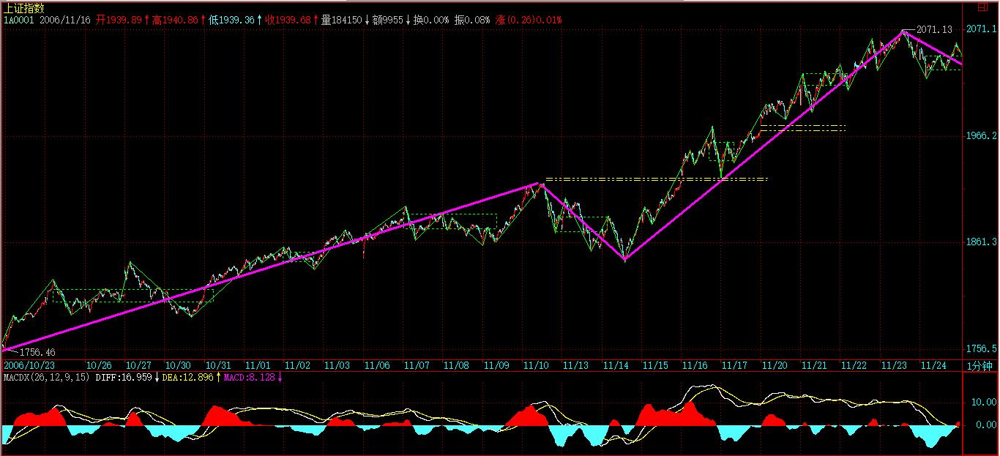
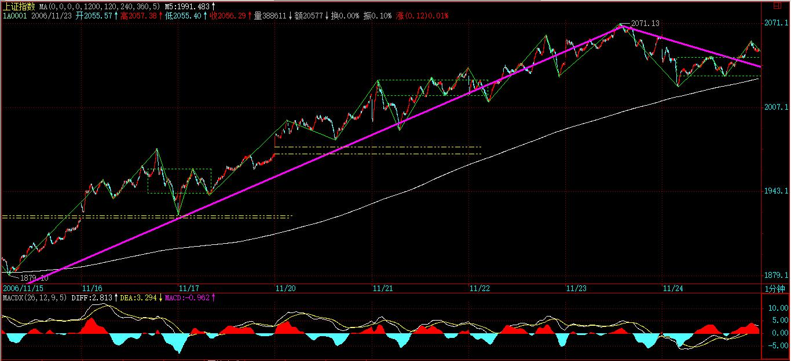
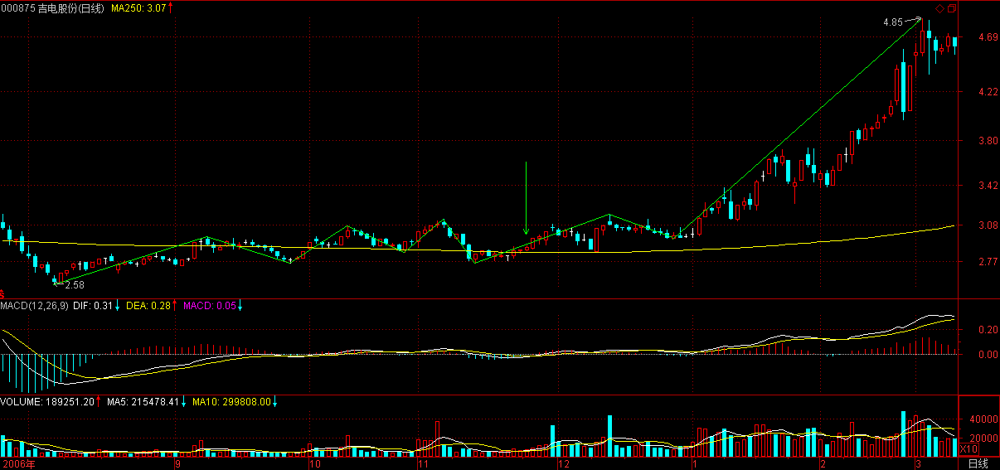
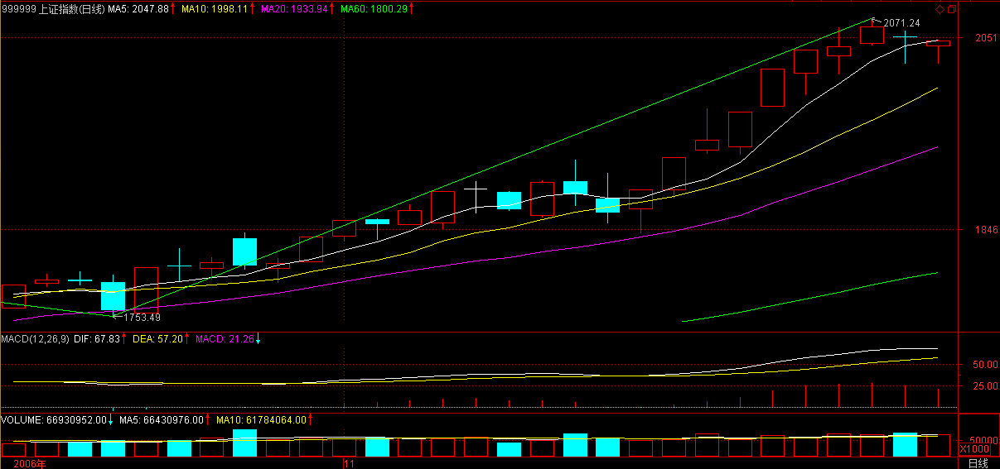

教你炒股票10：2005年6月，本ID为何时隔四年后重看股票
(2006-11-24 12:02:50)
2001年6月后，本ID就从未看过股票，直到2005年6月。本ID是严重反对人民币升值的，曾写有“货币战争和人民币战略”在网上广泛流传。但到2005年6月，本ID知道有些事情不是人力可为的，天要下雨、娘要嫁人，LET IT BE 吧。所以2005年6月，本ID时隔四年后重看股票。【韶山映山红】“只要有点金融常识的人都知道，本币的历史性升值所带来历史性牛市曾被太多国家所经历。”】
【韶山映山红】2005年7月21日，我国进行了历史上第四次汇改。人民币汇率告别长达10年的紧盯美元的固定汇率体制，而进入了有管理的浮动汇率制度，并确定了人民币汇率的市场化取向。其内容归纳起来主要有三点：一是人民币放弃与美元挂钩，引入参考一篮子货币；二是人民币对美元的汇率从当天的8.2765:1改为8.11:1，一次性小幅升值2%；三是银行间一篮子货币兑人民币的每日收市价，作为翌日买卖中间价，上下波幅0.3％。】
在强国论坛的人都知道，2005年6月最暴跌时，本ID连续三次罕有地表扬一个政府官员，就是股市当时的新人、如今那位著名的山东人。其后还专门写文章为他说股改“开弓没有回头箭”而热烈鼓掌。【韶山映山红】当时的证监会主席尚福林。提出股权分置改革并付诸实施，使中国证券市场发生历史性转变。】同时，本ID却曾写过这样的文章“群狼争肉----国有股流通与国有资产蚕食、瓜分游戏！”。这，难道是本ID逻辑混乱、前后矛盾吗？
非也，这就是昨天本ID所解释的《论语》里“子曰：众，恶之，必察焉；众，好之，必察焉”的完美应用。
确实，从好恶角度，本ID严重反对人民币升值、反对国有股流通，而且深刻地分析了这些玩意后面的现实逻辑关系和严重后果。但在股市里，本ID从来没有好恶。【韶山映山红】教你炒股票03：你的喜好，你的死亡陷阱！】
只要有点金融常识的人都知道，本币的历史性升值所带来历史性牛市曾被太多国家所经历。本ID只知道，一旦人民币升值、国有股流通，股市将大涨。知识分子为什么可笑，就是有好恶而无“察”，企图以理论来理论现实，十足脑子水太多了。
书呆子是不适宜投资市场的，错了，应该是投机市场。别相信这世上有什么投资市场，世界本身都是投机的，还有什么资可投？就像有人号称所谓爱情，而所有的爱情，都不过是遮掩性游戏谎言的一条内裤而已。所有的性游戏都可以用这样的数学表达式表示：4N9。N代表从0到无穷的自然数，0等于没搞上，无穷等于天长地久也就是废话，1等于一夜情419，所有的性游戏包括爱情，都被这样一个数学表达式表示了。
那么，任何一个投资者和股票的性关系，也完全可以以此表示。任何股票和你，都不过是一个4N9的关系，可以投机的就是这个N，如果你能在这个N里把一只股票当面首一样采尽他的精气，那你就是高手了。其后再换一个继续N2的游戏，如果该游戏可以新戏不断，而你又能采之而不被采，那你就是高手中的高手了。
世界就那么简单，别把自己搞糊涂了。
股票，恶之，必察焉；股票，好之，必察焉。由孔子的话，不难明白以上的道理，而明白这道理，就明白投机市场第一原则“只搞能搞的”所依。智慧都是相通的，“只搞能搞的”，而不是“只搞喜欢的”。能搞是需要“察”而得之，不是靠喜好厌恶而来的。【韶山映山红】教你炒股票08：投资如选面首，G点为中心，拒绝ED男！】
随便在市场里抓一个人，问他为什么买手里的股票，一万个人有9999个告诉你因为他的股票如何如何好，这种人能在市场上长久活下来就世界最大奇迹了。本ID从来不觉得自己手里的股票有什么好，只知道他们能搞。
但几乎所有的人，包括庄家、散户，都喜欢为自己股票的好找理由。别以为庄家就不这样，庄家里的傻人从来不比散户少，本ID见多了。这些人，拿了股票就到处找理由为其持有、上涨编故事，就算股票已经从10跌到1了，还乐此不疲。
市场里所有亏损，都是因为持有了不能搞的股票而造成的。但无论任何股票，能搞总是相对的，不能搞却是绝对的，就像4N9里，如果你为了某面首把N设成无穷，那么劝你自杀吧，因为你活也白活了，你已经不是人，而是某面首的附属物。N只能有限地给予一个固定的能搞对象，有N1，就要有N2，这样才能生生不息，才能风生水起。
但在4N9任意一段N中，这面首、这股票就是你的全部，你要全身心地投入去“察”去“采”，投机市场，机会总是一闪而过，别到白天才问夜的黑，那什么菜都凉了。能搞是相对的，意味着随时能搞就会变成不能搞。一旦这“机”失去了，就会在不能搞的泥潭难以自拔。无论对面首或股票，都要全身心地往死里干然后抛弃，这是不能偏废的两方面，任何的失败者都一定是至少在其中一面失败了。【韶山映山红】敢买，会卖。】
在4N9的任何一段N中，可以有世界上最浪漫的故事、最火热的缠绵，有无数的细节，从前戏到缠绵到进入到高潮到不应到抛弃，【韶山映山红】对应建仓、洗盘、拉升和出货。】所有的故事只是唯一的故事，就像所有的AV都只有同一的情节。【韶山映山红】散户一样的情节就是建仓、利用震荡做短差降成本、持股待涨、出货。】
从下一期开始，我们将仔细分析同一AV情节的每一个细节，让每一细节深入你心，成为本能的反应，然后才能成为AV主角，在每一段4N9中高潮迭起，采阳不休。【韶山映山红】让每一细节深入内心，成为本能的反应。】
【网文】瞎扯赚大钱的逻辑
(2014-11-24 15:37:55)
朋友圈看到一篇文章，觉得挺有意思，转载一下。特别注明，本文作者：风吹江南
我自己一直在反思这些年里的很多事情，突然发现所有的成功失败，很大程度上都不是我自己个人能力决定的，而是很大程度上被大趋势给决定了，我很多年前写了篇叫《我为什么看空中国股市》，里面我提到我自己为什么离开股市，突然只是因为觉得我这个人能力不如别人，勤奋不如别人，运气不如别人，我凭什么跟人在一个能力充分竞争市场上赚钱？我唯一盈利性的机会其实只有一个，就是猪都会赚钱的时候，我才有赚钱的机会啊。也就是风口来的时候，例如06年，例如09年，那时候，满大街都会听到谁赚了多少，赚了多少，于是我就能有机会赚钱了，如果在一个不是普遍性的盈利市场上的时候，我发现赚钱一般都是辛苦钱，也就是跟人比体力才能赚钱，花更多的时间，做更多的调研，那些都是辛苦钱。而可悲的可能是竞争越充分的市场，你会更可悲的发现你即使很辛苦了，也是不赚钱的。
后来衍生出去看很多问题，发现其实不单是股市，任何行业好像都是差不多，2002年的时候，我们很多同学离开了中国去美国读书，都是名校啊，牛逼的一塌糊涂的名校啊，我们这些垃圾被留在国内，十多年过去了，我们这些垃圾在国内啥事情也没干，结婚生子，然后没事只能买房子，一套两套三四套，然后然后就发现那些国外读了n年的书的同学们可能就比较悲催了，回国可能一套房子也买不起，是我们能力强么，不是的，是因为我们赶上了好时候，中国大发展都格局里，能力其实是不需要的，我们自己也很悲催的发现，回老家去，甚至不如那些没考上大学的同学们，他们初中毕业、高中毕业就开始闯荡江湖，更早的接触社会，更早的在外贸领域做业务，而你因为可能是大学毕业，选择也比较多，反倒不如他们有更好的积累，尤其在过去十年赚钱最多房地产行业，一般比拼的其实也是胆魄而非能力，我们东阳是建筑之乡，很多人很小就跟着走南闯北做工程，然后在过去十年里，一个个都赚了很多钱，反观我们自诩名校毕业，其实是不如他们的，当然现在趋势也在变化，互联网出现的格局里，房地产衰退之下，这个趋势不同了，盈利逻辑也跟着变化了。
我前些日子碰到一个ut出来创业的小伙子，当年ut 可能在全国招聘的为数不多的本科生，他打败了无数的人终于挤进了ut，而那些被他打败的人，黯然的走进了阿里的大门，彼时的阿里容纳了一帮乌合之众，很多都是职业技术学校毕业的学生，名校几乎没有，十多年过去了，那个进了ut的天才，现在要出来创业了，那些没办法只能去阿里的人，一个个身价过亿要给那些牛逼哄哄当年逼的他们无路可走的牛人们投钱去了，能力决定一切么？好像还真不是。
前些日子，跟黄晓捷师兄谈话，他谈到他2001年在五道口读书的时候逃课去卖空调，希望发家致富，结果卖了一年多，晒得黑黑的回学校，然后说了一句话，叫辛苦不赚钱。跟我所思考的几乎是一致的，这简直就是句真理，这个世界上，赚钱的事情，从来不是辛苦的事情。你们比辛苦，比的过那些富士康的工人么，比得过农民伯伯么？但是他们比你更赚钱么？所以世界上，如果一个行业要靠比能力来赚钱的时候，你会发现好像赚的只能是辛苦钱了。更苦逼的是甚至很多人还赚不了辛苦钱，例如现在一堆苦逼的淘宝电商。
现在创业的人很多，我一直都跟大家说，创业有时候选择大方向很重要，因为赚大钱和赚小钱说白了，其实都会很辛苦，都很艰难，你路边开一个小店铺要做成赚钱，其实也不见得比做好一个国有企业要容易到哪里去，都不容易，但是同样辛苦，结果是截然不同的，这个时候，大格局大趋势就显得非常重要，尽量去做一些趋势性的机会的事情，市场整体向上的机会，只要做的稍微好点，总还是有机会的，而有些行业，你在怎么做，其实都注定了最终的结果都不会好。我们做投资的要去投资一个赚的是辛苦钱的时候，那就会发现我们赚取的只能是社会平均回报率，于是我们到最后发现得出的结论其实也还是尽量淡化能力的重要性，更多看中趋势性的投资机会，在大趋势性的格局里，在进行一定程度的铺量投资，能力无法量化，很难确切的预测，而大趋势的视野还是有一定的逻辑可循。
周鸿祎有篇文章貌似是说，趋势之下无可抵挡，孙中山很多年前有句话叫，天下大势，浩浩荡荡，顺之则昌，逆之则亡，意思就是任由你在牛逼，你也无法对抗历史的潮流，这就是趋势的力量。但是问题来了，趋势到底是什么呢？
趋势是什么很难定义，我们其实看趋势这个东西吧，倒是有几个特征挺有意思，第一个特征其实是趋势只有在将起未起的时候，才有意义，太早看到趋势其实毫无意义，你会错过太多的东西。也是为什么很多聪明人都赚不到钱的原因，趋势看到了最后就是虚无主义者，因为觉得这个也就这样那个也就那样，都没啥意思，看的太远的人，其实挺适合做先知，当然也很容易成为先烈，看的太早的悲催案例太多了，意义更是不大，哥白尼在中世纪就看到了地球不是宇宙中心，于是就被火烧死了，太多太多聪明人死在了不在当下生活的故事里去，等好不容易撑到风口来的时候，他已经先没了。
而如果，趋势都被人看到的时候，其实趋势的意义也就没量，当真理都被大家接受的时候，真理就会沦落为常识，你已经没有任何机会和优势来成为一个布道者了，在现实中也有挺多好玩的事情，前些日子听到一个农民说，政府让我们种葱，我们就种蒜，政府让我们种蒜，我们就种葱。这个就是极为简单的朴素的趋势性发现的案例。当趋势被所有的人都看到的时候，你其实只能回归到赚辛苦钱的逻辑里去，记住辛苦钱往往不赚钱的真理吧。
在这个特征里，我们收获的东西是什么呢？是提前预判很重要，因为只有在人们尚未发现，而你却提前发现，也提前动手了，那你或许能有先发性优势。这里挺有意思的是很多人其实都能看到一些趋势性机会，但是能下手的人其实也不多，看多做空，看空做多，甚至看而不做的人，其实都挺多，我们经常听很多人说，当年我怎么怎么看对了，但是这种看对了，跟你有啥关系么，屁关系都没有，总体来说，爱折腾的人，胜算更大，未来的创业很大程度上会比拼试错的次数和成本的综合。尤其是趋势留的时间窗口越来越小的时候。
我感觉我自己算是在金融领域这几年稍微有些薄名很大程度上还是做了些预判的吧，回头看两年来写的一系列金融文字，还是很大程度上预判来我国的金融经济形势，也对一些企业做了整体性的判断，大体还是经得起推敲，实践也在不断的验证一些当初的观点。
我2011年提出经济形势下行，金融去杠杆化即将开始的情况的观点，持有货币现金是相对合理的理性选择，现在基本上也得到了验证，最近很多人都在提说企业做好过冬的准备，其实现实的情况是，如果过去两三年前不提前准备好过冬，现在大部分企业都已经半截子入土了，也就无法过冬了。尤其是杠杆很高的金融企业，难度更大。一个普遍性的经济下滑趋势下，金融的整体性盈利格局是很难维系的，整个逻辑链条其实是很简单清晰的，难度就在于你怎么判断经济下行的格局，尤其是在2011年还不是很明显的市场情况下，乐观气氛浓厚的2011年里提通货紧缩的确是不太容易让人接受的观点。
我自己对金融行业得简单理解就是金融很大程度上看天吃饭的行业，在普遍性不赚钱的市场里，你金融机构要实现盈利，难度其实很大，这种典型看天吃饭得行业得合理逻辑就是能赚钱得时候，狠狠得赚钱，不能赚钱得时候就回家休息，游山玩水。不跟大趋势做对抗，当然不是说大趋势不好，你没有赚钱得机会，只是这种机会会很辛苦，好汉不赚六月钱？火中取栗得事情玩他干什么呢？
我过去几年一直都是这个观点，很多学生都问我，那我们怎么办呢？难道等死么。我其实不是很想的明白得是，为什么不做就是等死，不干事情，难道就不能休息睡觉？为什么要每天把自己弄的累死才心满意足？事实上，与其在家勤勤恳恳到处做风控放高利贷，不如跟着我游山玩水，骗吃骗喝，这个花钱一年能花多少？
我承认，我的课程一直不太被人喜欢，因为这个世界做个说实话的人，向来都不讨好，说实话尤其说难听的话的人，往往都挺可悲
当年袁绍官渡之战，谋士跟他说，不能打，不能打，一定败。袁绍不听非要打，还把谋士关了起来，后来果然败了，别人就跟谋士说，主公败了，真该听你的话啊，回来会感激你得。谋士就叹气说，不是的，如果主公胜了，一定会很高兴，然后天天奚落我，骂我神棍，我还能活命，如果败了，他一定会觉得面子挂不住，反倒把我给杀了。没多久就应验了，这个世界没人喜欢说真话，的确是有道理的。不过好在我是自由身，这个也是互联网带来得好处，就是你喜欢听就听，不喜欢听就不听，关我屁事。
好像扯的有点多，但是两年过去了，随着民间金融出事越来越多，其实基本可以验证一个观点就是，我们过去维系金融体系蓬勃发展的市场性基础在坍塌，从过去三十多年来看，维系我国信贷金融体系的基础其实是市场的企业一直是赚钱的，我们八九十年代，企业能赚钱，无论你是摆地摊还是生产物品，都能赚不少钱，2000年以后，生产可能本身不赚钱了，但是资产升值所赚取的利润甚至比单纯的生产本身还赚钱，使得你过去的金融体系，无论是低利贷还是高利贷都可以被收益覆盖，企业只要赚钱，金融机构你怎么玩，都不会出问题。
但是现在的市场的可怕之处在于谁都不赚钱，在一个整体不赚钱的市场里，金融的逻辑则永远无法实现，企业赚了十块钱，还你三块钱愿意，但是总共赚个三块钱给你两块，估计就心不甘情不愿了，如果亏钱了，要还你三块钱，基本就是跑路的格局，所以谈金融困境很多时候首先要谈的问题是经济问题，都不是本身单纯的金融问题，核心是你信贷供给无法解决企业是否盈利的问题，目前市场企业为什么不赚钱很大程度上是因为整体性的产能过剩，这个问题恰恰是非金融命题可以解答的，你放水也好，扶持也好，都无法消耗整体性的产能困境，这样的市场里，去产能成为了必然的格局，去产能是成本很高，代价很大，而放松金融恰恰不是去产能的逻辑，如何理解金融扶持呢？如同一桌子人嗷嗷待哺都快饿死了，怎么办？现实的选择应该是饿死一部分人，然后给剩余的人支持，这样就能延续下去，而金融放水是什么？放水就是如同来一场盛宴，给所有的人一起吃，然后呢，强壮的和不强壮的，是都能吃一场饱饭了，但是结果呢？结果其实是一起死。如此现实残酷，怎么选？不知道。
某地区政府呼吁救世，我跟他说，其实现在的救世其实说一场惩罚好人，保护坏人的制度，是恶制度，为什么呢？许多规范经营的好企业，其实过去几年都挺安分守己的，反倒是很多不安份的企业过去几年一直在扩杠杆，没节制的借钱，还大打价格战，浙江很多企业一直以低于成本价格销售，目的并不是为了产品获得利润，而是以此为基础向银行融资，进行其他领域的投资，他们的存在本来就让那些安分守己的企业很难生存了，现在出现问题了，结果要去救他们了，那不是扯淡是什么呢？坏人总是得不到惩罚，好人总是得不到保护的市场，最终就是大家都一起变坏吧。
现实还有些好玩的逻辑，市场上生产企业不赚钱的时候，我们其实就会发现，市场流动性会挺好的，为什么呢？因为很多企业因为生产不赚钱，不但不会借钱扩大生产，反倒会挤压出很多钱出来，于是形成了今年二季度三季度的信贷规模下降的情况，好人都不借钱了，因为借来的钱如果无法赚钱，好人为什么要借？那么借钱的是什么人？是已经陷入困境的企业，流动性出现问题的企业，才需要借钱维系流动性，避免不崩盘，而这部分企业，银行又不敢借钱，于是就出现了存贷规模双降的情况，很现实的市场就是如此。
那么这份生产中流出来的钱去哪里呢？安分守纪的情况下，应该是趴着，但是现实其实大部分的资金都不会安分守己，于是这部分钱，一部分成了游资，到处突击，寻找投机性机会，美其名曰做金融。另外一部分，其实是去了互联网领域，两个逻辑可能合一，互联网目前如此火热，恰恰反应的是整体产能过剩的情况下，对渠道的依赖，互联网电商就是突出的表现，第二反应是钱无处可取，追逐目前市场最大的热点，互联网，犹如黑暗中的灯塔，现实越残酷，灯塔就越是明亮，然后大家飞蛾扑火。
今年创业市场非常火热，大量的vc成立，是个人都成为了投资人，都希望投资出一个阿里巴巴，腾讯、百度等等，一边是实体的不景气，一边是创业氛围的浓厚，形成了鲜明的对比，两个逻辑其实是相同的，实体越不好，资金就越挤入具备想像力的行业中。这个逻辑其实暗含了一个很有意思的阳谋，就是政府鼓励和希望市场上的钱都尽可能尽快的被消耗掉，这是一场消灭钱的运动，我们可以理解成是金融去产能过剩的逻辑。想看这个逻辑的可以看我之前一篇文《只谈逻辑不谈对错》，这里不多说了。
我们在回到趋势这个话题里去，趋势的背后其实反应很多问题，现在很多人都在说阿里如何牛逼，如何牛逼，其实这个话题怎么说呢？在一个趋势起来的时候，乘风而起其实难度并不如想象中大，在新兴领域并不需要太大大努力，就能较为轻松的击败固有规则体系里的王者，苏宁曾经是线下的王者，当年股价也是及其牛逼的，但是阿里打掉苏宁，我并不愿意认为是一个企业对一个企业的胜利，他是一个时代对另外一个时代的胜利，每个时代里都有自己的王者，苏宁代表了互联网未出现之前的渠道之王，而阿里则是互联网时代的王者，本质反应的其实是人类走入了互联网时代，原先的生活作业方式时候对苏宁的依赖变得不再被需要。这个时候，你会发现不是苏宁不努力，不牛逼，而是再牛逼也没用，你是很好很好的，只是我也不需要了，这个是挺悲伤爱情故事。
事实上这种趋势性的颠覆市场上有过太多的案例，很多曾经在我们生命中如此重要且认为永远都不会离开你的东西，其实发现一点点都在离去，这个观点其实用在阿里、腾讯身上也上一样适用，你认为永远离不开的他们，也说不定很快会离去。
想到苏宁，我突然想起了国美，很多年前黄光裕和陈晓之争，当时我写过两篇文章骂陈晓，回头来看，我自己当评价是，我依然会骂陈晓，但是我却认同陈晓当时的思路，黄光裕在牢里写信要求每年新增门店数量，认为这是核心竞争力，是阻拦人家进入这个行业的高壁垒，门店越多，优势就预定先，很显然陈晓不认同这个观点，他砍掉了很多的不盈利的门店，经营理念之争引发了他们两个的恶斗，不去评价是非对错，单纯从结果来看，我们不得不说，其实黄光裕错了，在固有规则和体系里，门店越多，优势越明显，但是人类进入了互联网时代的时候，发现，门店越多，其实你是死的越快的，因为你做的再好再好，人们都不回来了，都不需要你了。而当你认识清楚这个趋势的时候，你要掉头的时候，你发现你压根无法回头，庞大的门店数量都是你的负担，而不是你的优势。你必须先自我革命，让自己归零，才能跟人家一条起跑线上，但是人家会等你么？即使一条起跑线了，你能保证你一定能在新规则下玩得过人家么？
这个就是可怕的趋势之争，不同纬度体系里的竞争是极其可怕的，压根不是单纯和纯粹的能力之争了。互联网其实是个底层革命，改变很多的生产作业方式，从而使得固有生产作业方式上的一系列王者的优势丧失。因为互联网这个技术，我们被改变了很多，在很多行业都日益被互联网的今天，金融业不可避免受到波及，但是事实上金融业由于是低频交易，他所受到的波及并不如对其他行业影响大，但是又由于金融业的客单价高，这种变革带来的影响力却很大。
这里其实我想讲下互联网下，对金融业的几个趋势性的改变，我最近很关注众筹，前几天跟红杉资本也谈到过这个话题，其实我想说互联网出现对早期投资的改变是比较现实的，最大的特征就是互联网使得投资非专业化的趋势大幅度加强，怎么理解呢？
原先的社会体系里，投资其实是很高大上的行业，投资人每天打高尔夫，住五星级酒店，一堆人找他要钱，然后他给钱，感觉很爽，再过去那个年代里，钱是极其重要的门槛，无论是投资还是创业，钱都是重要的门槛，你没个几千万在手，做什么投资，其实几千万可能都不够，创业也是，阿里在十年前拿到了投资基本上就可以把别的竞争对手给灭了，拿到钱和没拿到钱的竞争压根不再一个层面上。所以投资人的高大上很大程度上是钱堆积出来的，他选了谁，谁可能就能快速成长，远超越同行。
但是走到了今天两个明显变化，第一个是有钱人越来越多，越来越多的有钱人现在都进入了投资领域，随便个土豪都能拿出个几千万做投资的时候，我们发现高大上的投资已经彻底庸俗化了，而且原先被认为是专业性很强的行业其实被土豪也冲击的七零八落的，专业机构估值个千八万的项目，土豪一进来就轻松把你击垮，人家以亏了都无所谓的心态跟你玩，你很难玩的过他们，这种业余投资人的出现，对专业化还是有一定要求的行业来说是很可怕的，而互联网的出现是进一步加剧这个特征，互联网出现以后，让更多没什么钱的人凑在一起能量甚至超越了土豪。这个逻辑，越来越会得到验证，而且趋势呈现加强的态度，大量屌丝拿出无所谓亏得起的钱合投一些靠谱不靠谱的项目，然后拼了命的充当义务推广员的作用，帮助项目快速成长，我们最终发现，以前一千个人想创业只有一百个人能创业的时代过去了，现在一千个人想创业九百个人能创业了，为什么，因为市场给了很多的办法给他钱，钱不是门槛的时候，市场越来越公平，能力竞争越来越充分。
在早期投资格局里还采取传统基金的方式进行投资的逻辑，我个人感觉其实难度挺大的，现在的投资是两头当孙子，拿钱时候当孙子，投资项目时候也当孙子，我反正是不会去想做这种事情的，给人钱还看人脸色，这种钱不如不赚。
扯淡的有点多，我们再来谈谈，趋势的第二个特征是什么？是随机偶然不可测。我们看到很多是因为技术的不可替代性，群体性特征的不可测性。使得技术是不可琢磨的，而且群体性特征的兴起使得热点不断被改变，社会整体的无意识，你很难把握未来趋势的机会在哪里。关于为什么社会整体的无意识，可以看我书章节里大数据这个章节。这里不多说了。
我自己观察和发现，世界上能跟着趋势赚钱的是两类人，一类人是马云、黄晓捷这样的人，他们天生具备敏锐的嗅觉，对于市场的理解很通透，而且执行力很强，天生爱折腾，且够狠，对自己能狠下心来的人，都能成点事情，如果看准来方向，能成大事。
还有一类人压根不存在所谓选择一说，他们中绝大多数人所谓跟着趋势赚钱，并不是主动意识的结果，而是被动选择的结果，他们被社会的洪流抛向了不同的领域，然后就是花落谁家是谁家的格局，有人成事，有人败事，无非是祖坟冒青烟的结果罢了，94年被下岗的人，后来都能赚点小钱，而那些不下岗的员工，现在估计得下岗了，02年进不了银行得人，去了房地产或者去了阿里，现在赚了大钱。在过去的十多年里面，我们这个逻辑和趋势很明显，决定你是否赚大钱的逻辑，不是选择，不是能力，而是运气，对，就是运气。我一直跟很多人说这个世界，你赚小钱才是能力，赚大钱其实是靠命的，你努力勤奋，现在的社会，让你能过比较好的生活，但是，并不是努力勤奋就能让你成为马云马化腾的，命格不再，就别瞎想了。
其实我在台湾大学做演讲的时候提过一个叫中美教育比较的观点，我们发现美国赚大钱的人都是名校毕业，至少考上了名校，美国要上名校，也是不容易的，都是牛人，但是中国其实赚大钱的很少是名校毕业的，首富也只是杭州师范大学而已，不是说这个学校不好，至少没有清华北大好，这个大家总是要认的吧。那么这里说明的问题是什么呢？
是因为大爆发的年代里，越是底层越容易被抛向不一样的社会洪流，而不一样的洪流，往往会有大机遇，很多人没得选择，更不会走固有的社会路径，也就更容易被抛弃社会的大趋势之中去。我们过去十年的趋势性机会，不是互联网，互联网其实是最近一两年的趋势，过去十年的趋势性机会其实是资产升值，大量的房地产商在过去十年的盈利能力其实是极强的，只是趋势一旦逆转以后，互联网很轻松的就击垮了这个固有的社会趋势，不是房地产不行，也不是互联网太牛逼，而是社会趋势转化很快，在过去房地产是趋势的格局下，你会发现，我们曾经很多年的首富五十强，都是房地产老板，还有曾经的煤老板，他们的出身都极低，为什么呢？很多人其实到现在也没弄明白他们是怎么赚这个钱的，很多人都会把自己都成功归结为能力的结果，事实上这个是最大的可悲，哪里有什么能力的结果呢？你刚好在适合的年代碰巧做对了一件事情而已，然后以后就长期坚持这种策略，坚持固有的逻辑去做事情的话，结果可能会死的很惨。
妹的，每次到了正题的时候，就会发现写不下去了，互联网改变社会的几个趋势，其实几次演讲我都提过，互联网金融的趋势性机会到是没有怎么提，为什么呢？是因为底层架构改变的过程中，金融业是随之改变的，小逻辑必然是服从大逻辑的，所以看清楚互联网的趋势性变化，更有现实性意义。
大盘如期调整，请自己密切关注逆市不跌的股票，下轮的黑马由此产生的可能性很大。
目前正在5日线的多空争夺中，多头胜则会出现最强走势，当天调整完成，否则调整时间将大幅度延长。

但个股表现不会差，密切关注未启动的、逆势走强的股票。
2006-11-24 12:15
本ID有空会在最新帖子里即时有关大盘走势的提示。是否准确，各位可以自行判断。
昨天的提示转录如下：
2006-11-23 13:42:46
再次友情提醒，目前深成指数与沪指已出现背离，这是一个很不好的信号，如果2点以后还不改变，盘中震荡不可避免。而且指数进入调整的可能进一步加大。
2006-11-23 15:11:58
大盘如上友情提示盘中出现大幅震荡，震荡中新板块借机启动，这就是典型的轮动，短线技术好的在其中可以玩得不亦乐乎。
但大盘今天终显疲态，两地指数出现背离，成交量也有所萎缩，预示真正的调整迫在眉睫。注意，盘中震荡和调整可不是一回事，即使最短线的调整也至少要去考验5天甚至10天线的。
还是像中午所说的，对调整无须恐惧，技术好的人最喜欢调整了，调整正是寻找下一次上涨好股票的时候，至少可以利用调整换股或打差价，前期没动的股票也会借调整启动的。
2006-11-24 12:17
[匿名] 乡下人 2006-11-24 12:23:21
你这厮，自己的家园已经不错，每每去别处打广告，不自信。不要拉大旗做虎皮。
===========
正因为有绝对的信心才要广告，广而告之，中国有十几亿人，潜力巨大。
2006-11-24 12:26
[匿名] 快 2006-11-24 12:09:30
600118,600123,600832,数女如何看待？
=================
600118 中线调整，等待年线上移给予支持【韶山映山红】600118中国卫星。】
600123 中线问题不大，短线15.8压力不破，小心回调压力。【韶山映山红】600123兰花科创。前高15.78成为压力位。】
600832 年线压力不少，一旦站稳，中线行情展开。【韶山映山红】600832东方明珠。2015.04.29最后交易日后退市。现在的东方明珠同名不同股，代码不一样。】
2006-11-24 12:32
[匿名] 你的样子 2006-11-24 12:24:46
数女你好，我花了几天时间把你的博客从头看到这了，佩服、佩服。
有个问题想请教，像我基本上是股票的门外汉，能否趁现在的天时也介入股票呢？对股票来说是搞明白些重要，还是大势更重要些？
===============
先学习，别从开始就糊涂，那就麻烦大了。【韶山映山红】大势好也是别人的。学习才是自己的。】
2006-11-24 12:33
[匿名] 惊为天人 2006-11-24 12:28:44
美女，能否推荐下，股票入门的好书啊。看了你的文章，我深刻的理解为什么高手都是寂寞的啦。
===========
就看本ID的，对股票，全中国没有比本ID更权威的，你还想看什么？【韶山映山红】问天下谁是英雄，舍我其谁？】
2006-11-24 12:33
馋中听禅 2006-11-24 12:34:42
请问禅师：说起诗词曲赋，高晓松当面首够格吗？我欣赏他，尽管他是我们北大的对手清华的
================
现代诗词就不说了，古典诗词，暂时本ID还没看到当代有谁比本ID写得好的，本ID在网上贴的，都是中下水平的，暂时几次挑战都没见对手，其他就不说了。
2006-11-24 12:38
[匿名] 灵岩 2006-11-24 12:35:24
楼主：真的非常想知道你对封基、钢铁、电力（或公用事业股）的看法，希望你能够赐教，谢谢！
=================
都没问题，钢铁的中线行情不都在展开吗？其他也会表现的，拿着请耐心。
2006-11-24 12:39
[匿名] 灵岩 2006-11-24 12:39:15
不然我就请教个股吧，600026、600886、600401、600012、600231会如何走。谢谢！
=====================
600026 30天线中线关键，不破继续持有，买入最好时机已过。【韶山映山红】600026中海发展，2016.11.28变更为中远海能。放量突破年线、回踩不破，然后开始日线笔级别的线段类上涨趋势，所以“买入最好时机已过”。上涨过程中，一直在30日线获得支撑，所以“30天线中线关键，不破继续持有”。】
600886 回试年线得到支持，再确认不破有望展开中线行情。【韶山映山红】600886国投电力。日线笔中枢走势突破年线，同级别回踩跌破了，所以只是“回试年线得到支持”，再次日线笔中枢走势突破年线，需要看再一次回踩的情况，“再确认不破”才“有望展开中线行情”。】
600401 考验年线支持【韶山映山红】600401江苏申龙,2012.05.11变更为海润光伏。第二次放量突破年线，不一定是次级别回踩，所以“考验年线支持”。前面问答说的是：“你的介入时机不对。如果是短线，一定要在均线粘合时介入，这样就不用浪费时间。当然，既然已经介入了，就好好看着，不过要承受一定的短线风险。”】
600012 突破年线，等待确认【韶山映山红】600012皖通高速。前复权已经放量突破年线，不复权刚上年线，等待确认突破、确认回踩不破。】
600231 4.89短线压力突破前维持箱型，【韶山映山红】600231凌钢股份。“箱型”：1分钟趋势盘整背驰引起的5分钟中枢震荡。】中线问题不大。【韶山映山红】放量突破年线、回踩不破。】
2006-11-24 12:46
馋中听禅 2006-11-24 12:43:40
禅师好！大作已拜读并收藏，关于股票，禅师用的是未复权的图形，为何不用复权的？比如：600581周120p在4元阻力位。若复权120p为3元。我的理解：大多散户不复权，故将错就错。繁请指正！
============
打倒夫权，当然就不能要复权的。
2006-11-24 12:47
[匿名] 悠悠悠哉 2006-11-24 12:48:16
大妈 快回答我的啊
===========
先学会礼貌。
2006-11-24 12:50
[匿名] 夜雨 2006-11-24 12:39:31
帮助我看一下580004如何，谢谢【韶山映山红】580004首创JTB1。认购权证。】
================
还行，但权证风险较大，短线技术差的最好别参与。
2006-11-24 12:52
[匿名] 爱你——数女 2006-11-24 12:51:45
请教放地产看涨还是看跌？？
=========
二线地产股补涨，然后就是三线的，把握这个节奏。
2006-11-24 12:53
[匿名] 老闲 2006-11-24 12:50:00
连着看了几天你的BLOG，突然感觉自己就是属于你说的那种不能挣钱的废人，还号称学过经济学，不是一般的厚脸皮。向姐姐表示一下感谢，因为确实，你有的想法解决了一些困扰我的问题，呵呵，思想这个东西，有时候会产生意向不到的外部效应，感谢互联网，感谢博主分享自己的知识和经验。另外，请教个实际问题，看图的时候，是否应该看复权以后的K线？还想问问8.1买入的000898 3.2买入的000725 4块买入的600301，这三只股票应该如何操作？出了，还是留，目前这三支股占仓位不大，还有资金可以操作，多谢
=================
不复权，复权的可参看历史阻力、支持位。
000898一定不要追高买股票，刚突破年线回试时买不更安全有效？
【韶山映山红】000898鞍钢股份。提问者追高8.1买入的。】
000725等待一下，中线回解套的
【韶山映山红】000725京东方A。过年线、回踩没有得到确认，提问者3.2买入，动手早了，等再次过年线解套。】
600301还是年线问题，中线应该问题不大，短线磨年线会有点磨人。
【韶山映山红】600301南化股份。顺着年线向下走，所以缠师说“中线应该问题不大”。】
2006-11-24 12:59
开盘了，中午就到这，下午、晚上再说，再见。
各位最重要的是自己学会，本ID一个人解决不了所有人的问题，人一多，回答也回答不过来。
2006-11-24 13:00
五日线压力不少，站稳前应多观察，密切注意不随大盘而动的股票。
【韶山映山红】日线笔。】
【韶山映山红】1分钟线段中枢递归走势分析。】
2006-11-24 13:34
重新突破5日线，14点的回试确定站稳，大盘将展开反攻。【韶山映山红】这里的14点，不是时间的14:00点，而是上证指数的数值的14点。应该是这一天先跌破5日线，跌破了14个点，然后拉回，再次回踩，没有新低，然后拉起来，没有新低就盘整背驰，证明5日线“回试确定站稳”。】
2006-11-24 13:50
反攻力度有点弱。
个股表现不错，房地产股票但上面所说的，一线然后二线接着三线，现在连天鸿这种三线亏损房地产股票也启动了，但这时候，房地产板块短线压力就开始增加了，中线暂时问题不大。
【韶山映山红】600376天鸿宝业，2008.04.28变更为首开股份。】

2006-11-24 14:14
[匿名] 熊熊 2006-11-24 14:14:06
姐姐，我是熊熊，四年前在股市亏了本的笨丫头。看了你的博客我感触很深决定不再做个笨丫头了跟风的人。向你讨教一些建议，请你指点。近期只看了涨了指数没赚钱。这俩只股票走势能帮我讲讲吗？谢谢姐。
============
晚上回答你
2006-11-24 14:58
如期反攻，力度有问题，下周反复难免。

短线5日线是关键，不能跌破，跌破则重新考验2000点下缺口支持。

2006-11-24 15:00
马上要去中关村，有一个谈判，不能回答各位问题了。晚上回答，再见。
2006-11-24 15:02
[匿名] 公子白
[匿名] 随缘 2006-11-24 15:17:59
禅主,为何用4和9这两个数字,代表何意,其它人明白吗
---------
我来回答吧，替楼主分担点问题。
419 for one night 一夜情
楼主是把原来的扩展了，有趣。
2006-11-24 17:36
[匿名] 夜雨 2006-11-24 13:08:50
姐姐,真是高手, 这几天发现您的文章,真是惊为天人,谢谢你刚才回答了我580004的问题,我现在手上还有重仓,601111,成本4.45,000039,成本14.2,600436,成本17.4,这些要卖还是要留,还有想进600832,现在能进吗,谢谢
==============
601111【韶山映山红】601111中国国航。】
千万别追高买股票，一定要在刚启动的时候买，中线大幅上涨后在等中线调整结束再买，这样虽然会浪费很多所谓的机会，但这样一定能活下来。现在牛市没问题，随便怎么买都会挣钱，一旦养成这个习惯，以后就麻烦大了。
该股票中线是没问题的，短线折腾少不了。
000039 【韶山映山红】000039中集集团。】
不要等拉了大阳线才买股票，一定要习惯于在放量突破回调时买股票，这样风险小很多。
该股票中线没问题，短线有一定折腾，因为刚好在前期缺口位置上。
600436【韶山映山红】600436片仔癀。】
17到18元的短线箱型正面临突破选择，
该股属于大幅上升后的大中级调整，15.5到19.6的中线大箱型整理结束前折腾少不了。
600832【韶山映山红】600832东方明珠。2015.04.29最后交易日后退市。现在的东方明珠同名不同股，代码不一样。】
短线面临11.4的年线压力，一旦有效突破，上升空间彻底打开。
2006-11-24 20:50
[匿名] 熊熊 2006-11-24 13:39:53
姐姐。我近来看了你的博客我就是不能挣钱的人。请教您000562和000875的走势。请赐教。在钞股方面请多出点文章。谢谢。
==============
000562 【韶山映山红】000562宏源证券，2014.12.09最后一个交易日后退市。】
暴长后的中线大调整，【韶山映山红】暴涨后，多空双方交换场地。就看进场的是大资金还是新韭菜了。 调整了五个月，这是缠师的中线的跨度。】
短线有一次突破走势，但是否真突破，要密切观察，因为这种类型的走势最多骗线了。
【韶山映山红】000562宏源证券，1分钟线段中枢走势分析。30分钟中枢的向上离开段，可能“真突破”形成上涨趋势，也可能假突破，新高并且中枢盘整背驰而继续调整，所以“这种类型的走势最多骗线了”。】
短线压力8.8,中线压力9.6，展开第二波，必须有效突破后一位置。
【韶山映山红】000562宏源证券。短线压力应该是前高8.60的位置。中线压力应该是前顶9.58的位置。】

000875【韶山映山红】000875吉电股份。日线正在跟年线纠缠，走势不明朗，所以看周线。】
正积聚中线启动能量，【韶山映山红】这里是缠师第一次在炒股的内容里出现“能量”这个词汇。这里表明，一个走势的启动，需要积聚启动能量，也就是长期的横盘震荡，或者说盘整。】
中线关键位置是120周线，【韶山映山红】周线下跌筑底中。这时候MA250线还没有形成，所以只能看MA120线。】
目前在3.4元，正逐步下行，【韶山映山红】周线MA120在3.4元，表明缠师是不复权的看图。】
中线行情展开以有效突破该线为标志。【韶山映山红】中线行情要走半年，日线MA120的级别，以周线MA120的突破为标志，也就是高级别的二买为标志。 当日收盘价2.89元，还有空间需要磨。】
【韶山映山红】周线复权看图，已经站上MA120，并且在回踩确认。】
【韶山映山红】之后，日线笔回踩年线不破，然后开始拉升。】

2006-11-24 21:07
[匿名] 请教LZ 2006-11-24 21:10:32
600832的年线是8.78啊，怎么是11.4，差这么多？我的设置是240日，未复权的。【韶山映山红】600832东方明珠。2015.04.29最后交易日后退市。现在的东方明珠同名不同股，代码不一样。】
==========
你的不对，找找原因，另外，年线一般用250天。
2006-11-24 21:16
风月 2006-11-24 21:14:06
“就看本ID的，对股票，全中国没有比本ID更权威的，你还想看什么？”
“现代诗词就不说了，古典诗词，暂时本ID还没看到当代有谁比本ID写得好的，本ID在网上贴的，都是中下水平的，暂时几次挑战都没见对手，其他就不说了。”
天下间，就没见过有这么自信的人！如果数学妹妹的自信给我一点，我也会改变很多！悄悄的问一声妹妹，怎么样才能有强大的自信？？
===========
实力
【韶山映山红】怎么样才能有强大的自信？实力。】
2006-11-24 21:17
对具体股票不能一个个解释了，太浪费时间。有些人一个人就弄了十几只股票，如果这样，本ID什么都不干都解释不过来。
以后每次每人最多一只股票，特别以后人越来越多，这种情况要找一个好的解决办法。
而最好的办法，就是你们要自己学会。学会渔，自有鱼。
2006-11-24 21:20
[匿名] 咕咚 2006-11-24 21:17:18
不知下周初楼主对沽证有何见解？
===========
等待一次大盘转折时的大爆发。
2006-11-24 21:23
[匿名] toLZ 2006-11-24 21:22:55
“你的不对，找找原因，另外，年线一般用250天。”
小姐如何设置，我一向都是这么看的啊？我刚才注意比照了一下，你前面所说的年线我都对不上，万望指教，或许这个问题对你很简单。
===========
对不起，本ID对电脑系统没什么研究，东方明珠8元多的年线肯定不对，可能没把G股的除权算上，每套系统都不同，自己慢慢研究去吧。
【韶山映山红】600832东方明珠。2015.04.29最后交易日后退市。现在的东方明珠同名不同股，代码不一样。】
2006-11-24 21:28
[匿名] 无言 2006-11-24 20:11:21
今夜外汇市场美元大跌,下周对股市会有何影响
=========
这种思维方式是完全错误的，不要预测任何消息的影响，而是要仔细观察市场对消息的所有消息的综合反应，也就是市场的走势本身。就像感冒之于人的体质，消息是来测试市场体质的，而不是用来预测的。【韶山映山红】如何观察、分析“市场对消息的所有消息的综合反应”？以后研究。】
2006-11-24 21:31
[匿名] 数妹fans 2006-11-24 21:28:58
数妹辛苦了！
===========
没事，有时间就多说点，没时间就少说点，本ID不能保证天天都能如此的。
2006-11-24 21:32
[匿名] 摄影之友 2006-11-24 21:24:04
LZ:你更象是智慧的化身!~~~ 面对楼主的大智大慧.真的是听君一习言.胜读十年书.而您这样年轻,又怎能不让我想起:有志不在年高.无志穷活百年这句话!~~~你是智慧之子!~~~
我入股市也很长时间,大概有近三个月了.可我仍旧输在心态的问题上.唉.慢慢调整吧.我前几天出掉了600177(雅弋尔),可今天它却逆市上涨.所以想请教:
1 600177我下周可以再追回来吗.尽管我看LZ说,对摒弃的股票就 要绝情;
2 600028(中国石化),我是7.70的价格,600019(宝钢),我是6.36元的价格.可以继续持有吗;
3 请教LZ下周大势有什么评论吗;
=================
你这种问题有典型性，本ID不介意说多两句。【韶山映山红】“你这种问题”：出掉了，它却逆市上涨。】
首先你要问自己当时为什么抛那股票。如果你是本着中线介入的，那股票中线所有指标都走得很好，一直在120周线上调整，没有跌破这中线的生命线，所以找不到要中线走的理由；短线就不说了，走了就走了。【韶山映山红】600177雅弋尔。缠师说的对摒弃的股票就要绝情，是指不能搞的股票。】
所以买股票时一定要先搞清楚你为什么要买，你搞他的理由是什么，是短线的还是中线的，相应的要设计好介入的模式和仓位控制，不能被市场的短线波动所影响。【韶山映山红】划重点：买、卖的理由。操作级别或操作周期。介入的模式和仓位控制。】
【韶山映山红】600177雅弋尔。2006年3月有什么事停了两个月，跳空四五个板开盘。然后调整、横盘。日线笔的调整已经结束，开始盘整缓慢向上。】
你另外两只股票介入的价格是不是有点太追高了，中线，它们都没有问题，但本ID觉得还是要养成绝对不追高的好习惯，除非是刚启动，【韶山映山红】只有刚启动的时候可以追高。这个追高就是三买的操作。】在大幅上涨后才追高，这不是投资的长久之计。【韶山映山红】大幅上涨后就只有做三买的短线操作了。】
【韶山映山红】600028中国石化。】
【韶山映山红】600019宝钢股份。我是6.36元的价格.
大盘走势在上面收盘总结里已经说了。找3点附近本ID的帖子看看。【韶山映山红】“如期反攻，力度有问题，下周反复难免。短线5日线是关键，不能跌破，跌破则重新考验2000点下缺口支持。”
2006-11-24 21:41
这是今天在盘中的一些即时提示，好好研究一下，以后指数期货用得着。
缠中说禅 2006-11-24 12:15:10
大盘如期调整，请自己密切关注逆市不跌的股票，下轮的黑马由此产生的可能性很大。
目前正在5日线的多空争夺中，多头胜则会出现最强走势，当天调整完成，否则调整时间将大幅度延长。但个股表现不会差，密切关注未启动的、逆势走强的股票。
缠中说禅 2006-11-24 13:34:49
五日线压力不少，站稳前应多观察，密切注意不随大盘而动的股票。
缠中说禅 2006-11-24 13:50:35
重新突破5日线，14点的回试确定站稳，大盘将展开反攻
缠中说禅 2006-11-24 14:14:17
反攻力度有点弱。个股表现不错，房地产股票但上面所说的，一线然后二线接着三线，现在连天鸿这种三线亏损房地产股票也启动了，但这时候，房地产板块短线压力就开始增加了，中线暂时问题不大。
缠中说禅 2006-11-24 15:00:18
如期反攻，力度有问题，下周反复难免。短线5日线是关键，不能跌破，跌破则重新考验2000点下缺口支持。
2006-11-24 21:46
[匿名] toLZ 2006-11-24 21:41:34
对不起，本ID对电脑系统没什么研究，东方明珠8元多的年线肯定不对，可能没把G股的除权算上，每套系统都不同，自己慢慢研究去吧。
————————————————————
谢谢LZ，确实在夫权上的问题，已经解决了。非常感谢。
我一直用的是标准除权的，软件是最简单的钱龙，不知mm用的是何方神圣？
=================
机构室里是什么就用什么，每个证券公司都有所不同，本ID也不大注意。
关键是人，而不是系统。【韶山映山红】最终都要学会直接分析K线图，而不用任何辅助工具。】
2006-11-24 21:49
缠中说禅 2006-11-24 21:20:01
对具体股票不能一个个解释了，太浪费时间。有些人一个人就弄了十几只股票，如果这样，本ID什么都不干都解释不过来。
以后每次每人最多一只股票，特别以后人越来越多，这种情况要找一个好的解决办法。
而最好的办法，就是你们要自己学会。学会渔，自有鱼。
--------------------------------------------
馋中听禅 2006-11-24 21:49:24
初级问题我来回答，禅师只需说 对错
=============
这样也可以，你自己顺便也提高了。
2006-11-24 21:50
[匿名] 在路上 2006-11-24 21:42:35
禅师没回应我的股票问题那也没关系，在下还想请教２个问题：
１、我的侄女今年刚上初一，能否推荐几本未来对她在数学方面有拓展的读本。【韶山映山红】给侄女推荐，首先多余，其次肯定无效。中国人总有救世主情结。】
2、参否再解释几句“教你炒股票”4的那句“用你的眼睛去看，用你的心去感受”。唉！本人资质有限啊，还望赐教，谢谢！
==============
关键是她自己的兴趣，如果没有这方面的兴趣，看什么都不好使。
首先不要受消息、情绪等等的影响，这样你的眼睛才看得清楚，【韶山映山红】外界的信息，内部的情绪，都会让脑子动了眼睛。】然后你的心才会敏感，慢慢对市场就有了一种灵感，市场仿佛就是你的身体一样，他有什么风吹草动、头疼脑热的，你马上就有感应，这样才有点样子，【韶山映山红】浑然一体，心灵感应。】但这是要慢慢来的，先把一些基础的东西变成自己的一种本能反应，例如建立符合自己的有效的操作程序等等，这是初学者最基本的东西。【韶山映山红】把缠论变成本能反应，是初学者最基本的东西。】
2006-11-24 21:57
[匿名] 破缠悟禅 2006-11-24 21:52:10
禅师你好!本人新进入股市,请教几个问题!麻烦禅师帮忙分析!目前本人手中持有:000858 000659 600050的股票,麻烦禅师给分析下形势!谢谢!另外本人想学下短期炒盘,请问禅师有什么忠告给些!
=============
000858【韶山映山红】000858五粮液。】
大涨后的中线大调整，
现在正等待5周线的上移支持，如果短线能站稳5周线，则第二波突破就很有可能出现，否则还要折腾折腾。
000659【韶山映山红】000659珠海中富。第二次突破年线、回踩不破。】
600050【韶山映山红】600050中国联通。前面课程回答过：“不要习惯问有多大潜力这种问题，就像问跌到多少才是底一样，都是些害人的想法产生的问题。 你只要需要知道中线行情正在展开，持有一直等待行情结束的信号产生。”】
中线都没问题，详细就不说了。
2006-11-24 22:01
[匿名] 小迷糊 2006-11-24 21:54:19
我从mop追数女到天涯杂谈,又到股市论坛,再到这个blog.谢谢数女在方法论上对股票操作的评论,看了真感觉当头棒喝,让我悟了很多东西,本月实战战果辉煌,无一失手,这是数女的功劳.哈哈.数女,到成都请你喝茶,多谢多谢.
===========
要不断总结，不能被胜利冲昏头脑，毕竟现在是牛市，操作难度要小多了，市场操作是一个武功修炼的过程，不能把自己局限在一个境界里，要先摸索总结，然后寻求突破，达到一个新的境界。
这都是自我修炼的过程，别人只能从旁说道几句。
2006-11-24 22:05
[匿名] 摄影之友 2006-11-24 22:08:35
你另外两只股票介入的价格是不是有点太追高了，中线，它们都没有问题，但本ID觉得还是要养成绝对不追高的好习惯，除非是刚启动，在大幅上涨后才追高，这不是投资的长久之计。
==========================================
谢谢LZ.那我下周如何操作?出掉它们吗(600028/600019)? 也不再追600177了吗?郁闷!~~~ 唉..无知者无畏!!也许就是这样的心态我才追的.
============
也不用全抛了，毕竟中线行情还没有完全结束，如果你满仓这两只股票，那最好借短线冲高机会，减低一点仓位，这样就减少了风险，资金运用也可以灵活点。如果占仓位比例不高，那就留着也没问题。
说实在，你这类情况，谁处理都麻烦，而所有操作的困难都是操作的失误造成的，养成好习惯是投资第一重要的事情。别怕机会都没了，市场中永远有机会，关键是有没有发现和把握机会的能力，而这种能力的基础是一套好的操作习惯，这样所有的操作都没有什么两难的地方，都很简单。
真正的高手从来不迎难而上，把自己整天搞到制之死地而后生，看看庄子里解牛的故事，好好想想。
【韶山映山红】庖丁解牛。《庄子·养生主》。三层解读：1，纵向，得道。“所好者，道也，进乎技矣。”“以神遇而不以目视，官知止而神欲行。”2，横向，“月更刀”，“岁更刀”，“十九年”“刀刃若新发于硎。”3，始终怀着一颗敬畏之心。“虽然，每至于族，吾见其难为，怵然为戒，视为止，行为迟。”
庖丁为文惠君解牛，手之所触，肩之所倚，足之所履，膝之所踦，砉然向然，奏刀騞然，莫不中音。合于《桑林》之舞，乃中《经首》之会。
文惠君曰：“嘻，善哉！技盖至此乎？”
庖丁释刀对曰：“臣之所好者，道也，进乎技矣。始臣之解牛之时，所见无非牛者。三年之后，未尝见全牛也。方今之时，臣以神遇而不以目视，官知止而神欲行。依乎天理，批大郤，导大窾，因其固然，技经肯綮之未尝，而况大軱乎！良庖岁更刀，割也；族庖月更刀，折也。今臣之刀十九年矣，所解数千牛矣，而刀刃若新发于硎。彼节者有间，而刀刃者无厚；以无厚入有间，恢恢乎其于游刃必有余地矣，是以十九年而刀刃若新发于硎。虽然，每至于族，吾见其难为，怵然为戒，视为止，行为迟。动刀甚微，謋然已解，如土委地。提刀而立，为之四顾，为之踌躇满志，善刀而藏之。”
文惠君曰：“善哉！吾闻庖丁之言，得养生焉。”】
2006-11-24 22:23
太晚了，先下，各位晚安，再见。
2006-11-24 22:25
[匿名] thanks 2006-11-24 22:23:22
LZ,我每天都光顾你的博客，在这里我学到很多的知识，感谢你给我们带来了快乐。顺便问600797可以搞吗？【韶山映山红】600797浙大网新。】
==============
中线没问题，
短线最好的、也就是均线粘合时机已经错过，目前介入，要冒一定突破失败的风险，所以只能算是次好的时机，是否介入，关键看你对风险的承受能力如何了。

今天最后一个问题了，再见。
2006-11-24 22:30
(2006-11-25 09:30:12)
今夜
只让大提琴迷死你
让大提琴迷死，并不算一件太丢人的事儿，总比让大蹄禽迷死要强点儿。当然，比让那超女迷死，就强得更多了。在历史血色的星幕上，让大蹄禽迷死的弯曲成飘动的尸影；在当下桃色的抹布上，让超女迷死的弯曲成飘动的蚊影。嘶咬历史的蚊子尸体横陈，大蹄禽称之为“书”。被书的历史超女般桃色，瞬间化为鲜血点点，跌落在大蹄禽巨大的脚丫上。历史，好一盘芥末鸭掌！
让大蹄禽尸影去，让超女抹布去，让历史芥末鸭掌去！今夜，只让大提琴迷死你！
a小调大提琴奏鸣曲
心之足
只行走在
心之间
天鹅
死神
也曾如此歌唱
梦幻曲
风
弯曲了
今夜的星空
洛可可主题变奏曲
杀死爱的
只有爱
b小调大提琴协奏曲
故乡
那一抹夕阳
比梦还轻
请关闭其他所有背景音乐
（待续）
严禁抄袭，违者必究
中午有个饭局，先下。各位好好欣赏吧。
2006-11-25 10:11
中午、晚上，两个饭局，折腾到现在，中间还外加点男猿人不宜的活动。
大周末的，就不要说什么股票了。世界不只有股票，一个只有股票的生命也太不值得生命了。
像做爱一样做股票，先做爱吧，然后再股票。
2006-11-25 23:15
[匿名] lran
学生欲先为孺子，至于君子，至于君，或至于道，至于禅。不知此生有望无。
==============
如此也稳妥，但如果有大勇猛、大智慧者，犯不着如此周折。本ID说你就佛，你敢承担吗？不敢承担，就是缺乏大智、大勇；如真的以为有所承担，就是大妄言、大痴汉。
佛，干屎橛，着它作么？干屎橛，又碍你什么？碍你的，只是你，瞎觅什么？
2006-11-25 23:22
[匿名] 我都说 2006-11-25 16:58:17
大提琴协奏曲我最喜欢圣-桑那首<<第一大提琴协奏曲>>,我有张马友友板,三星带花的演录啊!
============
下周就他了，外带一个艾尔加的。
2006-11-25 23:25
各位，晚了，该安了；安不了的，爱去；爱不了的，做去；做不了的，继续做，做多了，自然爱了。
再见。
2006-11-25 23:27
请继续欣赏。
2006-11-26 14:03
(2006-11-26 12:13:49)
子曰：视，其所以；观，其所由；察，其所安。人焉廋哉？人焉廋哉？
杨伯峻：孔子说：“考查一个人所结交的朋友；观察他为达到一定目的所采用的方式方法；了解他的心情，安于什么，不安于什么，那么，这个人怎样隐藏得住呢？这个人怎样隐藏得住呢？”
钱穆：先生说：“要观察他因何去做这一事，在观察他如何般去做，在观察他做此事时心情如何，安与不安。如此观察，那人再向何处藏匿呀！那人再向何处藏匿呀！”
李泽厚：孔子说：“看他的所作所为，观察他的由来始末，了解他的心理寄托，他还能躲藏到哪里去呀！他还能躲藏到哪里去呀！”
详解：
孔子，中央情报局、克格勃的先驱？看了三人的解释，不免有此疑问。腐儒“我本位”逻辑，在此有了最明目张胆的表演。这类解释的唯一现实假设就是：从“我本位”出发，人只有两类，符合“我”的和不符合“我”的，前者是朋友，后者是敌人。三种解释中的观察、看、了解等，都是从“我本位”出发的，最后的所谓无处藏匿，其实就是对应这样一个命题：无论任何人，在“我本位”下，都可以把他分类，没有一个人可以逃掉。那么，在这种的逻辑下，人的世界这样构成了：每个人都以“我”为本位对其他人进行如此的分类，人的世界就在这相互的分类中分裂。
从此，人类社会就成了这样一个“鸡鸭鹅兔”集中营，人人以所谓的“视、观、察”扒光别人又被别人扒光。然后，一切诱奸、强奸、自虐、SM、NP等等游戏就此展开，腐儒把这章安排在“为政”一篇里，他们心目中的政治就是诱奸、强奸、自虐、SM、NP，两千多年来的政治也因此被他们塑造成诱奸、强奸、自虐、SM、NP，这就是诸如上述三人类似解释所自我塑造的历史。这种腐儒所腐败的解释渗透到历史的每一角落，如此政治构成了自我复制的传染过程，成为社会结构任一部分的非先验性先验基础。
其实，本章根本无关于两千多年来腐儒的“我本位”胡扯，由此产生的“视其所以；观其所由；察其所安。人焉廋哉？人焉廋哉？”断句也是完全错误的，正确的断句应该是“视，其所以；观，其所由；察，其所安。人焉廋哉？人焉廋哉？”其中，“以”，凭借；“由”，遵从；“安”，安置；“廋”，隈曲。“其”，指的是任何个体的人，即“天地人”结构中“人”的个体化现实存在。现实，必有其“患”，而其“患”是以“不患”而位次的，“人”的个体体化现实存在亦然。本章讨论的就是显示出不同位次的现实个体之“患”所依据的“不患”。必须指出的是，这现实个体之“不患”在“天地人”结构就是其“患”。并没有任何绝对的“不患”，这在前面关于“患”与“不患”的论述中早有说明。
站在现实个体的自我系统中，其“不患”结构是无法考察的，因为在那里，“不患”是一切依据的依据，也是其结构考察的依据，任何的考察都是同语反复，就像在欧几里德几何公理系统内用三角型内角之和180度与平行线的唯一性之间的互证一样。但站在“天地人”结构中，现实个体之“不患”成其“患”，因此就有其位次，考察其内部结构就成了可能，就像可以站在欧氏几何、罗氏几何、黎曼几何之外去考察它们各自的公理化结构，用三角型内角之和进行相应分类研究。而本章类此而对人的个体之“不患”进行的分类研究，得出一个“视、观、察”的个体“不患”结构，所以孔子才有了“人焉廋哉？人焉廋哉？”的感叹，用一个通俗的说法，就是“人不过如此”，就像在公理化的视角下，“三角型内角之和180度”之公设不再神秘，不过如此而已。
两千多年后，西学中出现了康德，对人类的先天能力（站在《论语》的话语系统中，就是上面所说的个体“不患”）进行了彻底的研究，写出了近现代哲学历史最重要的三大批判，成为近现代哲学最重要的源头，从此，哲学的研究没人能绕开康德，而《论语》本章，也就是孔子的三大批判，其意义和康德是一样的，必须与之对照才能更深刻地理解。不知其“不患”，又焉知其“患”？不知其“患”，焉能不患？
康德，把人类的认识能力分为低级的认识能力“感性”与高级的认识能力“理性”，感性是认识的开始，是认识不可超越的范围，是高级认识的对象和质料。高级认识能力分为知性、判断力和理性，经验并不是感性的直接结果，而是知性综合感性材料后的结果。例如科学研究的所谓自然界，甚至每一个个体的人，这些经验、认识对象，并不是感性所把握的，而是知性作用的结果。判断力，更准确的是规定性的判断力，是应用知性的先天法律形成经验、认识对象的能力。而理性，就是把知性的先天法律尽可能扩展的能力，一般这种能力的极限就是产生绝对的主观理念，例如上帝、世界、灵魂等。但这种能力一旦把理性自我扩展到把制造的理念幻想当成有实有，就会产生各种谬误，例如灵魂不灭、上帝存在等。因此必须限制理性的应用范围，但这种限制，反而是人摆脱自然必然性的实践前提。人的理性实践，其前提就是意志（人的高级欲望能力）的自由，而这才使得道德成为可能。但理性的实践前提，在康德那里是不能应用在实有之上，它只涉及“应有”而不是“实有”。
知性与理性之间，如果单纯是规定性的判断力所连接，那人就成了一个必然性的机器，意志的自由就成为不可能，理性的实践也不可能。康德就此显发了“反思判断力”，使得意志自由与知性的必然有了协调的可能，人首先在艺术上创造出一种自然与道德、必然与自由的统一，而康德又把这延伸到世界从必然到自由的可能。其后，列宁主义所延伸的运动，将这付诸实践，成为人类社会在康德思维范式中对必然向自由的可能进行的一次行为艺术。当然，这和马克思毫无关系。
有了康德的比较，孔子的三大批判就有了明晰的可能。“视”，人与认识对象之间的看，相当于感性以及康德规定性判断力所连接的知性与理性所构成的高级人类认识能力，也就是人类所有的认识能力；“观”，看法，相当于“反思判断力”所连接的自由意志；“察”，当下的直“观”，是自由意志的当下实践。“视，其所以”，认识能力是人所凭借的；“观，其所由”，自由意志是人所遵从的；“察，其所安”，自由意志的当下实践是人所安置的最终归依。孔子比康德高明的是，他和马克思一样，不会去假设一条从必然到自由的艺术之路，你本自由，何必自由？列宁主义是康德艺术之路的必然延伸，而和马克思无关，和孔子的“圣人之道”更无关。
缠中说禅白话直译
子曰：视，其所以；观，其所由；察，其所安。人焉廋哉？人焉廋哉？
孔子说：认识能力，人的凭借；自由意志，人的遵从；当下直“观”，即自由意志的当下实践，人的归依。人，哪里有隈曲啊？人，哪里有隈曲啊？
（待续）
严禁抄袭，违者必究
本章有点高深，因为康德的哲学，本来能明晰的人就很少。现在说孔子在两千多年前一句话，就把康德几十年的研究给盖了，大概能接受的人很少，够各位研究一阵子了。
2006-11-26 12:22
无论是否玩股票的，要不被股票或其他玩，而是玩股票和其他，就要好好学学《论语》，不知其“不患”，又焉知其“患”？不知其“患”，焉能不患？
2006-11-26 12:27
[匿名] 股王之王 2006-11-26 12:29:43
没坐上 够狠自己坐 不用研究那么多别人的 做好自己的就行
==============
不干白不干，不做白不做，但千万别做自己。
2006-11-26 12:39
nlittle 2006-11-26 12:35:01
谢谢博主。想起来了，有关于佛学唯心和唯物主义的讨教，导致留言被删。不能不说很多人终于心虚了。
============
不会吧，应该是其他原因。
2006-11-26 12:46
缠中说禅
CCTV 2006-11-26 12:35:49
LZ真准时，每天基本都一个时间，难道LZ在现实中是一个很古板的人？LZ今天说到康德，康德好象连每天散步的时间都很准时的，LZ像康德？
=============
午时，阳极而衰，明白不？
2006-11-26 12:52
nlittle 2006-11-26 12:38:30
沽的主力玩法很阴险，偶确实不适合玩，偶在580999上赔了10多万，所以准备博个中线，赔了算我倒霉，30万让别的散户少输点，挣了留下老本就是个捐字。
=============
只要不是太高买的，是有机会的。
2006-11-26 12:54
toLZ 2006-11-26 13:04:21
说好周末不谈股票的怎么又来了？
========
主要是他的留言给新浪删了，所以有点特殊。到此为止，下不为例。
2006-11-26 13:12
CCTV 2006-11-26 12:35:49
LZ真准时，每天基本都一个时间，难道LZ在现实中是一个很古板的人？LZ今天说到康德，康德好象连每天散步的时间都很准时的，LZ像康德？
=============
缠中说禅 2006-11-26 12:52:29
午时，阳极而衰，明白不？
==============
注意，这个是本ID写的，刚才新浪好象有点问题，突然跳出来了。
但必须注意，目前为止，只有这个匿名是本ID写的，因为是系统突然出意外造成的。
注意，有些贪玩分子会故意用这种方式装成本ID，如果你被骗了，那和本ID无关。本ID并不介意有人这样胡闹。
2006-11-26 13:31
古代 2006-11-26 13:32:06
老师这话学生有些迷惑：只有学好基本功用心领会“孔子”思想.自然就能达到庄子解牛故事.没吃过“芥末鸭掌”怎知其味.佛说：本来无一物.....可我是凡夫俗子又比较愚钝.只能用心学习
============
境界不是用功就可以突破的，光用功是没用的，所谓诗在功夫外，光用功，连诗都写不好，别说其他了。
2006-11-26 13:36
[匿名] 小明 2006-11-26 13:42:17
但必须注意，目前为止，只有这个匿名是本ID写的，因为是系统突然出意外造成的。
-------
没有匿名，显示的就是LZ的ID。
============
说的是这个，这是本ID写的，今天新浪有点奇怪，怎么会突然跳出来，让本ID还要重新登陆。
[匿名] 缠中说禅 2006-11-26 12:52:29
[匿名] CCTV 2006-11-26 12:35:49
LZ真准时，每天基本都一个时间，难道LZ在现实中是一个很古板的人？LZ今天说到康德，康德好象连每天散步的时间都很准时的，LZ像康德？
=============
午时，阳极而衰，明白不？
2006-11-26 13:44
[匿名] WTOWC 2006-11-26 13:38:32
楼主，我看到其他有几个匿名的孔庆东，还叫你侄女，是不是也是有人故意搞的。
=============
应该是，但也难说，男人死要面子，就算扒光了还想匿名盖盖也说不准。本ID对这类问题没兴趣，爱谁谁去！
2006-11-26 13:46
[匿名] nn 2006-11-26 13:50:03
楼主现在在玩孔子,俺被楼主玩,被谁玩不重要,重要的是玩得高兴,俺高兴就愿意被玩,不高兴就不被玩,玩股票就高兴,赚了就是玩,亏了就是被玩.玩或被玩已经不再重要了,关键是充实了业余生活,赚没赚对生活影响不大,数字游戏而已,谢谢楼主提供一个可以被高兴的被玩的场所.楼主已经将孔子玩成了缠中说禅的代言人,但确实有道理,继续支持!楼主同意俺的观点吗?
=============
说的不对，本ID只按孔子的意思来解释，并没有增加本ID自己的想法。本ID可以理解孔子，孔子怎么能理解本ID？这点本ID早有说过。但孔子的是一个很重要的基础，不了解孔子，更高深的就免谈了。
2006-11-26 13:59
[匿名] 小明 2006-11-26 13:50:45
LZ这么博学，实在是佩服！以LZ的才学，做个国家战略研究顾问什么的一点都不差吧？如果真的如此或许对咱老百姓也是福祉啊。
============
这种活自有人干，本ID只干别人干不了的。
2006-11-26 14:01
[匿名] 小明 2006-11-26 14:02:17
不知LZ为啥对男人有那么大的深仇大恨？总找机会挖苦，打击。男人好面子其实是好事，试想，如果哪个人连脸面都不要了，“不知其可以”！不过在LZ面前丢面子实在不是丢面子的事。就好比男人在心爱的女人面前丢面子一样，不足为俱。LZ以为如何？
================
这种男性中心主义的想法还是少想点吧，那个时代早过去了。
2006-11-26 14:04
2点了，外面的天空依然灰暗，这北京十一月的天空。
下了，再见！
2006-11-26 14:13
这里提问题的，请到今天的新帖子里看回答。
2006-11-27 12:27
(2006-11-27 12:10:52)
今天必须把这帖子在博客里回放，否则过两天都给删光了，都没证据表明本ID曾写过该文了。本ID没博客以前的帖子都是先发在强国论坛，那是本ID的大爷，最近强国论坛换新版，很多老帖都查不到了，包括这帖子，二爷天涯杂谈、三爷猫眼、四爷猫扑竟然也没了，现在就剩下天涯的经济版上还残留了一个，马上复制过来。各位看到没有，当时本ID的名字还叫“喜欢数学的女孩”。帖子最早应该在2005年7月中旬，当时正在二次探底考验1000点，【韶山映山红】桃花：（要在行情二次探底，下探失败时进场，即：二买）】但就算现在保留下来的2005年8月5日，刚好是二次探底成功突破双底颈线的那天中午，也足够早了。现在回头去看，有谁能在那么早提出“大行情”三个字，又有谁能对这行情开始的性质给一个这么鲜明的定义“G股就是G点”？
【韶山映山红】桃花：
【韶山映山红】G股就是已经完成全流通股改的股票，为了区别未股改的股票，在前面加个“G”字。如G三一，G金牛等。G股的设立基于不解决全流通就不能进行再融资的规定，迫使更多的公司股改。】
说这个不是要显摆本ID如何有先见之明，这根本无须显摆。关键是对现在走势给一个明确的说明。
在博客里，5月份给出了一个新的命题，就是“大牛不用套”，而且特别强调这个“不用套”最重要的是不能套用原来的走势，【韶山映山红】见路不走。】为什么？因为“G股是G点”这个命题在2006年的5月份已经即将完成历史使命，后面就是“大牛不用套”的延伸，目前为什么不再提出新的命题、口号？就因为这个“命题”继续有效。【韶山映山红】桃花：（果然该命题继续有效至07年10月份6124点）】
用面首来比喻，“G股是G点”是把一个雏男变成一个面首很关键的一步，就是要他先认识G点，先有了G点，先让他开窍，在开窍之前，面首还不能算面首，只能算准面首。
行情也一样，当完成“G股是G点”前，中国股市只是从一个准股市变成一个符合国际规范股市的过程，从“大牛不用套”开始，大牛市的第一阶段才算真正的开始，【韶山映山红】桃花：（日线三买成立，大级别底部构造完成。注：这里缠师是配合基本面讲的，不是所有日线三买成立后，都会形成一波大牛市，要同时有基本面支持才行。但日线三买成立，在技术上是可以保证有三十分级别的上涨。）】这也是为什么本ID反复强调目前只是大行情展开的第一阶段的一个理由。
【韶山映山红】桃花：

对大盘的走势，本ID从2005年6月重新天天看盘以后，就从来没怀疑过。这大盘还早着呢，想想，96年的行情，实实在在地走了5年，即使按照96年的标准，现在难道不还早吗？
当然，短线走势会调整会反复，但真正的行情还没有真正的展开，让本ID给各位回忆一下96年到2001年行情的走势吧：【韶山映山红】静姐00-25】
第一阶段，走得最牛的都是成分股票，这也是为什么本ID反复强调让大家现在注意成分股的理由，而事实上，现在的走势就是这样。
第二阶段走得最牛的是所谓的成长股，第三阶段走的是所谓的重组股，等大盘大面积地炒所谓的重组股时，这大盘的大牛市才有结束的风险，也就是2001年见顶的时候发生的事情，这也是为什么本ID2001年能从容退出且4年不看股市一眼的理由，连续三次高潮之后，再牛的面首也有一个大的不应期了。
股市是有规律的，本ID现在已经把这N年大牛市的最重要节奏告诉各位了，本ID已经把股市像面首一样扒个精光给各位了。等着吧，不久以后，这就会被人抄袭，接着被市场所抄袭。现在市场上流行的不少概念，就是在N年前从本ID这里流传开去的，这些陈年谷子就不说了。
这里，还是重温一下G股成为G点的故事。G股已经过去，但G点依然需要，就像面首随着年龄的增加，G点会变化的，这和股市里G股以后，从成分股到成长股到重组股G点变化是一个原理，【韶山映山红】桃花：（形成板块轮动才能让市场持续兴奋，让行情走的更远）】市场的原理本来就和性的原理一样，这也是本ID名言“像做爱一样做股票”其中一方面的含义。
『经济论坛』G股就是G点，市场的原理和性的原理是一样的
作者：喜欢数学的女孩
提交日期：2005-8-5 12:15:00
本女和证监会从一开始就有打交道，从第一届到现在，都很熟悉。以前从来没有称赞过证监会，但对这一届是感觉最好的。前段时间就发过几个帖子，例如：“为尚福林鼓掌-------不会挑逗各方利益的战争不是一个好的调控者 (喜欢数学的女孩: 2005-06-20 20:17:51)”、“为尚福林鼓掌-------必须对企图用股权分置问题要挟政府的用法律制裁之 (喜欢数学的女孩: 2005-05-16 12:06:07)”等。当然，市场总是后知后觉者占大多数，否则先知先觉的怎么挣钱？当看到一些左派或名嘴继续按老思维对证监会大放厥词时，就知道又一批傻瓜在表演了。
G股当然是G点，这次是为证监会能对市场G点的充分摸索后加以引导而鼓掌。本女对山东人一向印象比较好，当然，生意上一般不要和山东人弄，但管理上，山东人确实比较厉害，看看现在一些大企业的头，山东人还是很多的。现在证监会的山东特色已经有点当时家电突起时候一种大刀阔斧的感觉，熟悉了以前证监会妞妞捏捏的人，当然是处处看错。
市场的原理和性的原理是一样的，所谓世界都是相通的。市场需要的是G点，没有G点就没有性，没有G点也没有市场。而G股当然是G点，现在所有的事情都是围绕这个G点来，这样就对路了。市场兴奋了，一切都好办；市场没感觉，一切都瞎掰。
这届证监会和以往的思路、特别是风格上都有了极大的改变，这种新气象是必须的，这也是本女为什么一开始就看好他们的关键。一场大行情是需要各方面的配合的，没有配合，没有共同的G点认识，行情就只能是空话。没有行情，市场也就是空话。
今天的反复折腾在上周已经明确指出

2006-11-24 15:00:18
如期反攻，力度有问题，下周反复难免。短线5日线是关键，不能跌破，跌破则重新考验2000点下缺口支持。
本结论继续有效。


2006-11-27 12:18
还是那话，短线继续板块轮动，没动的都要动。调整是短线高手的天堂，当然，中线的也可以打点短差，技术一般的就看着吧，
这“上上下下”的享受，也可以继续享受享受。
2006-11-27 12:19
[匿名] 打死你我也不说 2006-11-27 12:18:45
上午买了000004，请数女点评一下。【韶山映山红】000004国农科技。】
===============
中线有机会，
但短线没突破4-4.2元的压力区，还要继续折腾。
另外，如果不是强力突破的走势，一般最好别早上买股票，因为没有T+0，经常下午可以有很好的选择。
当然，如果是中线着眼，逐步建仓，那是另一回事。
2006-11-27 12:23
[匿名] 请教 2006-11-27 09:12:21
博主今天怎么还不来?在下有两个股请求诊断，600015华夏银行,600883博闻科技，万请不吝赐教.另:对博主学识阅历万分佩服.
============
600015【韶山映山红】600015华夏银行。】
三线银行股，大盘调整后有补涨潜力。
600883【韶山映山红】600883博闻科技。】
中线有潜力，短线等待均线系统走好。
2006-11-27 12:33
[匿名] 数妹fans 2006-11-27 12:27:29
数妹，请帮我看看000608，600649后市如何操作？谢谢
=============
000608【韶山映山红】000608阳光股份。】
二、三线房地产股，正补涨中，介入最好时机已过，目前介入有短线风险，中线问题不大。
600649【韶山映山红】600649原水股份。2008.05.12变更为城投控股。】
中线有潜力，【韶山映山红】周线图。突破周线MA120的过程中，所以有日线MA120级别的机会。】
短线在半年和年线间需要积聚能量。【韶山映山红】这是缠师第二次说积聚能量。以日线MA120和日线MA240为中轴的横盘震荡，持续了一年，两条均线都走平了。还没有出日线三买，所以还是积聚能量的状态。】
2006-11-27 12:36
[匿名] 青皮六 2006-11-27 12:31:27
由女孩到禅师真是一大跨越,人的思想与年龄真的不成正比.请教女禅师该搞科技股了吧,基金还戏吗
===============
这是必然要搞的，只是迟早的问题，目前正积聚启动的能量。【韶山映山红】这是缠师第三次说积聚启动的能量。】
【韶山映山红】科技股。以后研究。】
基金中线没完，但介入最好时机已过。【韶山映山红】哪个基金？以后研究。】
2006-11-27 12:39
[匿名] 老无用 2006-11-27 12:39:03
很受教。请教女禅师600376的走势？谢谢。
===========
三线地产，等待补涨契机。
【韶山映山红】600376天鸿宝业，2008.04.28变更为首开股份。】
2006-11-27 12:40
[匿名] 博主 2006-11-26 20:04:25
能帮忙看可按600018吗
=========
中线仍有潜力。短线再启动需要补量。【韶山映山红】600018上港集团。2006.10.26刚10送35。】

2006-11-27 12:47
[匿名] nlittle 2006-11-27 12:41:12
哎，主力要恨死博主了，偶坚决支持。下午准备满仓认沽，要么升天，要么短期下下地狱。
========
心态好一点，不能赌性太大。除非你觉得自己短线感觉很好，否则最好不要满仓参与风险太大的品种。
赚钱是一辈子的事情，而不是一锤子的买卖。
2006-11-27 12:49
[匿名] 国平 2006-11-27 12:43:39
请楼主看看600887、600200，多谢！
==========
600887【韶山映山红】600887伊利股份】
中线没问题，短线考验年线支持力度。
600200【韶山映山红】600200江苏吴中。】
庄股，有自救企图。
2006-11-27 12:54
[匿名] 海子 2006-11-27 12:51:12
数女: 你好!请看一下000822如何?多谢!
============
有潜力。【韶山映山红】000822山东海化。】
2006-11-27 12:55
今天大盘的走势十分规范，最终就刚好收在本ID所强调的5日线上，其实，目前大盘并不太重要，关键是把握好个股轮动，本ID每次都反复强调这一点，强调不用怕调整，调整就是机会。
大盘结束调整后的这次上攻一旦完成，下一轮的调整将比较大，是全面性的，大多数个股都会跟着调，而不像这次，就大盘股调，这点是必须注意的，本ID事先告诉各位了。
2006-11-27 15:10
[匿名] 是非 2006-11-27 15:11:40
LZ,美国通过对日圆先先升再跌实现了对日本经济成果的转移,你觉得这一幕会在中国重演吗?
=============
你去看看本ID几年前写的“货币战争与人民币战略”，博客里有。
目前的情况并不是本ID愿意看到的。
2006-11-27 15:15
[匿名] 瞎鼓捣 2006-11-27 12:51:13
请教高人600087如何
===========
短线放量过急，需要缩量确认突破后再放量。【韶山映山红】600087长航油运。2014.06.04最后交易日后退市。】
2006-11-27 15:17
[匿名] 外科医生 2006-11-27 13:12:36
请问小妹能否现价介入000042深长城
多谢了
==========
【韶山映山红】000042深长城。2014.03.14变更为中洲控股】
11月14日回试年线的最佳买点过了，现在介入要承受一定短线震荡风险，
但中线问题不大。
2006-11-27 15:24
[匿名] 想发财 2006-11-27 13:16:21
请LZ看看000959、600508，多谢！
=========
000959【韶山映山红】000959首钢股份。】
年线蓄势，中线问题不大，短线需要补量。
600508【韶山映山红】600508上海能源。】
半年线蓄势，中线问题不大，短线尝试突破。
2006-11-27 15:30
[匿名] 冰火 2006-11-27 13:40:26
大姐, 请问我的判断是否对,
000407, 中线不错, 短线半年线有反复.但好象就要启动.
000503, 短线启动, 中线不错, 但启动后还需确认.
好像大姐看盘主要是看均线系统啊.谢谢.
=============
000407, 【韶山映山红】000407胜利股份。】
均线没完全走好，箱型整理蓄势。
000503, 【韶山映山红】000503海虹控股。】
年线蓄势，中线有潜力。
本ID没有什么是主要看的，只要均线现成，不要按其它键，回答问题比较方便。【韶山映山红】表面上看，缠师回答问题的时候，看盘主要是看均线系统，实际上只是借用均线系统的方式来解释走势。实际上均线系统不是缠论本身的技术系统，只是辅助工具。】
2006-11-27 15:35
[匿名] 7nt 2006-11-27 12:56:28
本女和证监会从一开始就有打交道，从第一届到现在，都很熟悉。
========================
据相关资料,楼主应该是80年代出生的人,第一届证监会成立于1992年10月,那时楼主应该才12岁左右,楼主怎么和它们打交道?另外楼主在2005年6月前整整4年没有抄股,25岁减4,也就是说楼主在21岁前就已经赚够亿元身家,请问楼主多大开始投资股市?起步资金多少?虽然这些问题含有隐私问题,但回答这些问题也可以让那些怀疑楼主年龄及资金来路的人消除疑问.先谢谢楼主了.
==============
关于年龄，本ID只说过没经历文革时代，其他什么都没说过。
本ID为什么就不能和刘大爷打交道？后面三位周大爷、周大叔的，本ID为什么就不能打交道？刘大爷现在还在很多地方兼了很多职务呢。
【韶山映山红】1992年10月中国证券监督管理委员会宣告成立。
历任主席
刘鸿儒（1992年10月至1995年3月）
周道炯（1995年3月至1997年5月）
周正庆（1997年5月至2000年2月）
周小川（2000年2月至2002年12月）
尚福林（2002年12月至2011年10月）
郭树清（2011年10月至2013年3月）
肖钢（2013年3月至2016年02月）
刘士余（2016年2月至今）
2006-11-27 15:47
[匿名] 圆无边无实虚 2006-11-27 13:34:32
佛说：菩萨心不应住色布施。须菩提！菩萨为利益一切众生，应如是布施。如来说：一切诸相，即是非相。又说：一切众生，则非众生。须菩提！如来是真语者、实语者、如语者、不诳语者、不异语者。-----<金刚经>
请教博主,<楞严经>中佛将什么放在了首位?
随文字无实意,动念即乖.你即是我,我也即是你,你不是我,我也不是你.佛吃饱了,不等于我吃饱.故此请教博主,谢谢!
==================
声前、末后且不问你，何谓这一念？这一念都不明白，还说什么“动念即乖”。
2006-11-27 15:50
[匿名] 真冰火 2006-11-27 13:48:01
博主，匿名留言的虽然无从区分来源，但添加一段代码到你的博客里，可以看到每个匿名留言者的IP，而且是真实IP而不是代理IP的（包括以前的）。也许你对留言人的IP地址不感兴趣，但至少有助于防止有些小人利用匿名系统捣乱。我希望你能添上代码，搞清楚谁是谁。
===========
心放宽点，名字就一符号。
2006-11-27 15:50
[匿名] 炼铁设备 2006-11-27 14:58:33
我完全不懂股票，看着大家向楼主请教股票潜力的气氛，我竟插不上嘴，心里感到惭愧．楼主，趁在牛市的好时机，能否给我推荐一支股票，一方面发点小财，另一方面学点股票知识，借以扫盲．谢谢
========
本ID不是股评，没兴趣也没资质推荐股票。
市场里永远有机会，关键你是否能把握。还是先学吧。
2006-11-27 15:53
有事先下，晚上有时间再上来，再见。
2006-11-27 16:03
[匿名] 急等钱用 2006-11-27 17:25:23
请教600704， 4.75元套牢这星期能解套否?
=============
投资最重要的一条就是用来投资的钱必须是多余的，可以长期利用的。
本ID不想当算命先生，希望你好运吧。
【韶山映山红】600704中大股份，2011.05.03变更为物产中大。提问者使用“急等钱用”作为名字，股票追高买在已经翻倍的顶部，还要问“这星期能解套否？”。如果不是6124这样的大牛市，死定了。从这一条问答开始，缠师不再像“算命先生”一样的点评股票了。】
2006-11-27 21:39
[匿名] 无言 2006-11-27 18:13:35
请教楼主,600879在这周行情中向上空间有多大,谢谢
=========
预测是股评干的事情，本ID不是股评。【韶山映山红】和上一个提问者一样，没本事还要做超短线，只关心“这周行情中向上空间有多大”，缠师不愿意被人看作是“股评”了。】
要在投资市场成功，唯一只需要知道，此时此地能搞吗？如果仍在能搞的标准下，就继续持有，否则抛弃，就这么简单。
【韶山映山红】600879火箭股份,2009-10-30变更为航天电子。】
2006-11-27 21:43
[匿名] 想飞 2006-11-27 15:17:28
LZ,请问600036调到位了吗
==========
一定要改变思维模式，不要问什么调整到位没有的问题，而是要问自己搞的标准是什么，每个人的标准都不同，这与资金量和投资经验有关。
唯一正确的问法是：600036现在符合自己搞的标准吗？
【韶山映山红】600036招商银行。】
是否符合，只有你自己知道，如何你自己都不知道，那请你先停下来，自己想清楚，不清不楚就把市场到赌场，市场会变脸的。
2006-11-27 21:48
缠中说禅 2006-11-27 15:53:23
本ID不是股评，没兴趣也没资质推荐股票。市场里永远有机会，关键你是否能把握。还是先学吧。
==================================
[匿名] 炼铁设备 2006-11-27 20:06:22
2.商品期货白糖,大豆在春节前会成什么趋势呢?请发表下你的高见!谢谢
================
先学习吧。
先自己心中有算，才不会盲目。
别人永远都不能替代你自己。
2006-11-27 21:56
[匿名] lran 2006-11-27 21:53:53
鱼我所好也，可嗟来之鱼总有吃完的时候，博主目前心情看来不错，有问必答，可还是奉劝各位，100条鱼也比不了渔啊，其实博主股票文章中自有一以贯之，《经济学》、《孔子》、《马克思》、《股票》等等实为一篇，视、观、察而已。求鱼不如学渔，熊掌在此，庸人弃之。学生作妄语，待博主斧正。
============
自己心中有数，才不会盲目。
别人永远都不能替代你自己。
佛，也只有你自己去成，谁也替代不了你。
2006-11-27 21:58
[匿名] 面首 2006-11-27 20:09:04
我有一万元能不能炒股啊，会不会因此发财？
===========
为什么不呢？
但发财只是一个结果，心里有结果，就不会有结果了。
先问自己能否耕耘吧。
2006-11-27 22:02
[匿名] 清 2006-11-27 21:20:16
问题：中信国安03年买入，S宁新百04年买入，其实只是执着不想卖出而已，你觉得如何操作。给我一个操作建议，别说得太“股评”呀，可以的话不妨说明可以持有到什么时候。
==================
既然已经长线持有了，就一直持有到长线不能持有为止，而现在没有任何这样的信号产生。【韶山映山红】两只股票都坐了一回过山车，长线持有也就不在意了。】
【韶山映山红】000839中信国安。】
【韶山映山红】600682S宁新百，南京新百。】
2006-11-27 22:04
[匿名] 狼 2006-11-27 21:47:28
请教000850，000680后市如何操作，谢谢！！
==============
000850【韶山映山红】000850华茂股份。】
大涨后的中线调整中，短线要突破需补量。
000680【韶山映山红】000680山推股份。】
6.9元的120月线是长线行情展开的最重要关口。【韶山映山红】缠师这里有笔误。当时该股刚刚上市119个月，还没有120月均线。】
2006-11-27 22:10
[匿名] 关于有色股 2006-11-27 21:54:52
今天下午时候似乎有色股的主力在撤退？似乎在进攻其他的品种，LZ如何看？这是主力暂时的撤退吗？很快又能搞起来？
===========
短线轮动很正常，长线看，有色股票的分化在于筹码的集中度，有些散户拿的太多的，就只能继续折腾了。散户不敢拿的，都变庄股，走起来就没谱了。
2006-11-27 22:13
[匿名] 小股民 2006-11-27 21:58:57
请楼主禅师帮忙看看600426和600016的后市
不知道这会进入600016会不会有大风险
===============
600426【韶山映山红】600426华鲁恒升。】
一般股票从个位到十位都要长期折腾的，该股就是围绕10元干这活，中线问题不大，短线还是看成一个9到11元的大箱型比较稳妥。
600016【韶山映山红】600016民生银行。】
本ID从来不希望人追高介入，4元多刚破年线时哪里去呢？世界上又不是只有一只股票。当然，该股中线没问题，但这不是一个必须介入的理由。

2006-11-27 22:22
[匿名] xuesheng 2006-11-27 22:17:58
请问lz,000897如何。
========
大涨后的三角形整理，短线要突破需补量。【韶山映山红】000897津滨发展。】
2006-11-27 22:24
晚了，下了，再见。
2006-11-27 22:25
yahwang 2006-11-27 22:59:27
初学乍练，入市两周。持有601398，000788，000751，600616，600079各1/5，无后续资金。老衲想尝试自己在股市的年收益率。请点评。
===========
中线问题都不大。
【韶山映山红】601398工商银行。2006.10.27上市。】
【韶山映山红】000788西南合成，2013.05.09变更为北大医药。】
【韶山映山红】000751锌业股份。】
【韶山映山红】600616第一食品，2008.10.08变更为金枫酒业。】
【韶山映山红】600079人福科技，2010.04.23变更为人福医药
2006-11-28 09:04
[匿名] LIVERPOOL 2006-11-28 02:47:18
请教数女：600500,600642后市如何操作.关注600256,过了买入时机，请问还有机会吗？谢谢！！
============
持有等待卖点出现。
【韶山映山红】600500中化国际。】
【韶山映山红】600642申能股份。】
【韶山映山红】600256广汇能源。】
股票在任何时候都可以买入，唯一的不同是承受的风险的不同。
而好的方法就是在最低风险的时候介入，但世界上没有绝对无风险的机会。
介入的关键是你明白你的风险在哪里，能承受多少，怎么退出。
2006-11-28 09:07
[匿名] 密码 2006-11-28 06:38:28
这么说来600550、0523这种刚回踩年线的最值得搞喽？缠MM是不是这个意思？
===========
请好好看教你炒股票9：甄别“早泄”男的数学原则！【韶山映山红】不是凭长相去判断。】
【韶山映山红】600550天威保变，2015.03.18变更为保变电气。】
【韶山映山红】000523广州浪奇.】

2006-11-28 09:09
[匿名] ddt181 2006-11-27 19:12:23
姐姐，斯佩服你，我几年前买的600352和600253几只垃圾，都套着，指数涨了一翻，讨教什么时候可以解放？
==========
等吧，会轮到他们的。
【韶山映山红】600352浙江龙盛。】
【韶山映山红】600253天方药业。2013.06.06最后一个交易日后退市。】
2006-11-28 09:12
以后有新帖请到新帖子问。
回答也在新帖子。
2006-11-28 12:54
(2006-11-28 12:05:08)
十五
血，清晰地纵横在蒸汽萦绕的镜面。喧嚣的风，无声地涌没。玫瑰，时间的私处，血红地绽裂。昆仑山，鲜血淋漓；太平洋，血浪翻涌。雷电，划过血色的天空；流星，血滴般坠落。
原始的气味疯狂着疯狂，凄厉了夜半的无声。一片片，一丝丝，一点点。天地，不断坠落。时空的碎片，血红的鬼眼，曳着青白的烟，晃着幽蓝的火，静止地飞驰。
一滴血的天地，星河灿烂。七亿亿亿颗巨大恒星组成的血臂，自由地舒张。巨大的蜘蛛，巨大的蛛网，七十七亿亿的恒星黏附其上，一颗颗，血滴般晶莹。
轻轻地，穿过无边的蒸汽，天地在指间碎裂，蜘蛛的嘶叫荡不出一丝的风，只拖着淡红的弧线，滑过最后的凝寂。明亮的镜面上阡陌纵横，血红地熄灭。
十六
“我喝纯的，你加雪碧？”
“不！” ]
“好酒要醒，先说事儿。”
“行，我认识几个玩红酒的，其中有两个牌子还挺出名，王总喜欢红酒？”
“哈，还行，平时白的多，你看，中午又喝了！”
“那现在还行？”
“哈哈，没问题。”
大概中午喝多了，他不断走神，对谈的事儿一直无法集中。
“王总，酒该好了，事儿就这样，余下的让下面的人继续吧！”
“好，先喝酒。”
他唤来服务生，斟酒、上菜。
（待续）
不能光写股票和孔二爷，今天，关心一下体液。
2006-11-28 12:12
今天走势很正常，关键还是这两天一直强调的5日线，
目前最稳妥的走法就是让5日线和10日线来个接吻的前戏，然后再次高潮。
但必须再次指出，这次高潮过后，相应的不应期要比这次长。
2006-11-28 12:15
[匿名] 蕃茄 2006-11-28 12:20:56
按楼主的说法,深沪两市继续背离呀,这前戏难度大点
===========
难度不大就不叫前戏了。前戏是难度最大的，有前戏，高潮可待，连前戏都没有，只能喝西北风了。【韶山映山红】“前戏”。以后研究。】
2006-11-28 12:23
[匿名] 破缠悟禅 2006-11-28 12:22:06
禅师，现在大盘的走势和你说的基本一致，请教个问题，你预测下一波中哪个版块应该可以先达到高潮？谢谢指点！
==========
所有板块都会动一次的，如果从力度上看，还是中低价股的补涨上，特别是强势板块的补涨股。毕竟目前人都很谨慎。新板块的大面积高潮，要等待下一次大的不应期结束之后。【韶山映山红】为什么？以后研究。】
2006-11-28 12:25
[匿名] 希望你比我过得好 2006-11-28 12:27:40
楼主： 我最几天拿了点600263路桥建设，到昨天为止，已经收了七连阳，天天担心调整，今天早上终于把我洗出去，您看此股走势怎样，如果可以我还想接进来，不知有没有机会！（害怕越等成本越高）
===============
这种股票短线最好操作了，5日线不破就拿着，万一它玩小阳后长阳的着数怎么办？ 【韶山映山红】小阳后长阳的招数。】
【韶山映山红】600263路桥建设。2012.02.20最后一个交易日后已退市。】
2006-11-28 12:32
和各位说说银行股，不是让各位现在买，只是银行股是大盘风向。
目前最重要的是招商，他突破历史天价后回试。

整个大盘和银行股的走势与之极为密切，一旦他能真正突破历史天价，所有银行股都会进一步扩展上升空间。所以他的走势对短、中线大盘的力度十分关键。
试想，一个站在25-30元的招行，为所有股票打开了多大的上升空间。更别说50元的了。
招行最终能否上50元，这点本ID不愿意预测。但本ID只知道，每次大行情，深发展都上50元。【韶山映山红】000001深发展A，2012.08.02变更为平安银行。】
招行也是深圳的，他的行长姓马。【韶山映山红】马蔚华。】1988年至1990年任中国人民银行办公厅副主任； 1990年至1992年，任中国人民银行计划资金司副司长；1992年至1998年，任中国人民银行海南省分行行长兼国家外汇管理局海南分局局长；1999年3月至2013年5月，任招商银行行长。】
2006-11-28 12:37
[匿名] 不应期 2006-11-28 12:31:37
请楼主看看600508、000959、000630，哪个更适合中长线呢？谢谢！
==============
中线都没问题，至于长线，本ID只对4N9感兴趣，对天长地久的谎言没兴趣。【韶山映山红】这里是缠师第一次说中长线。对长线没兴趣。在6124那一波行情中，缠师一直持有那些股。可见缠师所说的长线是超过三五年的。也许就是十年一周期的那些。】
【韶山映山红】600508上海能源。】
【韶山映山红】000959首钢股份。】
【韶山映山红】000630铜都铜业，2007.09.14变更为铜陵有色。】
2006-11-28 12:39
缠中说禅
难度不大就不叫前戏了。前戏是难度最大的，有前戏，高潮可待，连前戏都没有，只能喝西北风了。
----------------
蕃茄 2006-11-28 12:35:18
楼主自研的这套东东还真的满贴切,看来沪市要接吻还是要靠银行呀
============
吻有几种：如果是飞吻，太轻飘，以后的走势不稳。
唇吻：这要小心骗线，只要不是骗线，其后走势都较好。
湿吻：骗线几率太大，但如果不是，那走势反而比较火暴。
2006-11-28 12:43
[匿名] 新手 2006-11-28 12:33:58
麻烦LZ看看600010、601398,多谢.
===============
中线都没问题。
【韶山映山红】600010包钢股份。】
【韶山映山红】601398工商银行。】
2006-11-28 12:45
缠中说禅
招行最终能否上50元，这点本ID不愿意预测。但本ID只知道，每次大行情，深发展都上50元。招行也是深圳的，他的行长姓马
--------------------------------
蕃茄 2006-11-28 12:44:21
他要让他的票票天马行空吗:))
=============
这样最好，皆大欢喜
2006-11-28 12:46
[匿名] 爱你——数女 2006-11-28 12:44:58
请教：深圳还能炒房地产吗？我问的是买房子，谢谢！
==============
本ID好几年没买过房子了，不熟悉。
炒房子还不如炒造房子的股票，就像汽车，你肯定对夏利没兴趣，但对夏利股票就不一定了。
2006-11-28 12:48
[匿名] CCTV 2006-11-28 12:47:03
爱你``````
======
别，现在还是爱玩、爱学玩股票比较实际。
2006-11-28 12:49
[匿名] 数女粉丝 2006-11-28 12:43:02
请问002037，我8块进的，近期能否解套？
【韶山映山红】002037久联发展。】
谢谢！
=========
不要在所有均线都向下发散时买股票，风险太大。
最近中小版的面首们扩张的也太快了，大家都有喜新厌旧的毛病，而且还有小非的压力，所以老的只好委屈一下了，等等吧。
2006-11-28 12:59
[匿名] 你的样子 2006-11-28 12:54:13
呵呵，好久没跟新这个了。这两天听缠女的教导，先学习。可是发现股票这个东西什么时候能学通了啊？又没有缠女的领悟力，什么东西一看就是最高境界。恐怕待自己学明白点，大牛市都过去了，于是决定缩小学习目标，只看缠女的股票文章。翻来覆去的看。看看能不能悟出什么点东西来。缠女能说说目前是入市时机么？
=======
学好了，永远有机会，熊市里都不缺机会。
关键是股票，你入的是股票，所以只要是好的股票，符合你指定的能搞标准就可以入，不入白不入。
2006-11-28 13:02
开盘，下了。再见。
2006-11-28 13:02
缠中说禅
[匿名] yhfly 2006-11-28 13:16:19
lz,能大致说说能搞的标准吗？
=======================
每个人搞的标准不一样，有的喜欢丰满，有的喜欢苗条，有的喜欢高，有的喜欢矮，挑自己喜欢的搞！【韶山映山红】有了完整的缠论以后，只需设定操作级别，买点买，卖点卖。不参与更大级别的调整。】
2006-11-28 13:18
这大盘够有表演欲的，中午本ID说最稳妥的走法就是让5日线和10日线来个接吻的前戏，结果下午就来了一次表演，把那些装纯情的吓了一跳。
上面还说了，吻有三种：
如果是飞吻，就这一下就没了，明天直接攻上5日线，扬长而去；【韶山映山红】飞吻，破5日线，然后快速收回日线上。】
如果是唇吻，那今天下午的表演还会有的。5日线是压力。【韶山映山红】唇吻，破5日线，然后在10日线上震荡之后收回5日线上。】
如果是湿吻，10日线一定要破的，那种火辣辣的镜头会不断出现，把所有纯情分子羞跑了，高潮才会出现。【韶山映山红】湿吻，破5日线，然后破10日线，震荡挖坑，然后收回5日线上。】
是什么吻，判断很简单，看住5日线就行了。【韶山映山红】这时候说的“吻”是股价和均线的关系。后面课程说的“吻”是短期均线和长期均线的关系。】
下午马上有应酬，晚上不一定能上来，尽量争取吧。
各位，看多点AV，不纯情了，股票自然能做好。纯情的人，连吻都怕看的，是股票不好的。
2006-11-28 14:56
大盘受外围影响选择湿吻方式，短线急跌，选择好不跌的股票，有机会。技术不好的，就等最近反复强调的5日线站稳以后再说了。
【韶山映山红】跳空低开，使得当时先跌破10日线，然后上涨收复10日线和5日线。】
2006-11-29 09:36
本课目录
教你炒股票10：2005年6月，本ID为何时隔四年后重看股票【网文】瞎扯赚大钱的逻辑周末音乐会18：今夜，只让大提琴迷死你！《论语》详解：给所有曲解孔子的人（35）子曰：视，其所以；观，其所由；察，其所安。人焉廋哉？人焉廋哉？经典回放：G股就是G点，市场的原理和性的原理是一样的那一夜，他的体液喷了我一身（十五、十六）